Chapter 8 — The Theory of NP-Completeness第 8 章 — NP-Completeness 理論
Course: R.C.T. Lee, Tseng, Chang, Tsai — Introduction to the Design and Analysis of Algorithms. Slide-deck companion (69 slides). This is the proof/QA-heavy final topic: the reductions are the core exam material.課程：R.C.T. Lee, Tseng, Chang, Tsai — Introduction to the Design and Analysis of Algorithms。這是配合投影片（共 69 張）的筆記。期末就考這一塊，證明跟問答超多：那些 reduction 才是考試重點。
Notation legend (the slides render these as plain glyphs; restored here):
∨= OR,∧/&= AND,¬x(written-xin the deck) = NOT x,→= implies,⇔/iff= if-and-only-if,≤ ≥ ≠ ∈ ∉ ⊆ ∪ Σas usual,□= the empty clause,xᵢsubscripts,(k+1)ⁱsuperscripts. Markers like "Lab. N" in the raw dump are slide numbers; cited below as (slide N).符號對照（投影片把這些畫成一般符號，這裡幫你還原）：∨= OR、∧/&= AND、¬x（投影片裡寫成-x）= NOT x、→= implies、⇔/iff= 若且唯若、≤ ≥ ≠ ∈ ∉ ⊆ ∪ Σ照一般用法、□= 空 clause、xᵢ是下標、(k+1)ⁱ是上標。原始檔裡像 「Lab. N」 這種標記其實是投影片編號，下面都用 (slide N) 來標。
Overview總覽
The chapter builds the theory of intractability: a large family of problems (the NP-complete, NPC, problems) for which no polynomial-time algorithm is known, and for which a polynomial algorithm for any one of them would yield one for all of them (collapsing NP into P).這一章在講 intractability（難解性）：有一大票問題（也就是 NP-complete、NPC 這群），到現在都沒人找得到 polynomial-time 演算法。而且重點是——只要你能幫其中任何一個找到 polynomial 演算法，全部就都解開了（NP 直接塌縮成 P）。
Core class definitions (slide 2):幾個核心類別的定義 (slide 2)：
| Class類別 | Definition定義 |
|---|---|
| P | Problems solvable by a deterministic polynomial-time algorithm.能用 deterministic（確定性）polynomial-time 演算法解掉的問題。 |
| NP | Decision problems solvable by a non-deterministic polynomial-time algorithm (guess + polynomial-time check).能用 non-deterministic（非確定性）polynomial-time 演算法解的 decision 問題（先猜一個答案，再用 polynomial 時間檢查）。 |
| NP-hard | Problems to which every NP problem reduces. (Need not be in NP themselves.)每一個 NP 問題都能 reduce 到它的那些問題。（它自己不一定要在 NP 裡。） |
| NP-complete (NPC) | Problems that are NP-hard and belong to NP.既是 NP-hard、又屬於 NP 的問題。 |
Concept of reduction (slide 3).reduction 的概念 (slide 3)。
Def: Problem A reduces to problem B (written A → B) iff A can be solved by a deterministic polynomial-time algorithm that uses, as a subroutine, a deterministic polynomial-time algorithm that solves B.定義：問題 A reduce 到問題 B（寫成 A → B），意思是：你可以用一個 deterministic polynomial-time 演算法來解 A，而這個演算法在過程中會去呼叫一個能解 B 的 deterministic polynomial-time 演算法當作子程式。
Intuition: "A → B" means B is at least as hard as A — if you can solve B fast, you can solve A fast.直覺上：「A → B」就是說 B 至少跟 A 一樣難——只要你能快速解 B，就能快速解 A。
Key concepts (slides 4–5):幾個關鍵觀念 (slides 4–5)：
- Up to now, none of the NPC problems can be solved by a deterministic polynomial-time algorithm in the worst case.到目前為止，沒有任何一個 NPC 問題能在 worst case 下用 deterministic polynomial-time 演算法解掉。
- There does not seem to exist any polynomial-time algorithm for the NPC problems.這些 NPC 問題看起來就是沒有 polynomial-time 演算法。
- The lower bound of any NPC problem seems to be of the order of an exponential function.任何 NPC 問題的 lower bound 看起來都是 exponential（指數）等級的。
- The theory of NP-completeness always considers the worst case.NP-completeness 理論討論的永遠是 worst case。
- Not all NP problems are difficult — e.g. the Minimum Spanning Tree (MST) problem is an NP problem yet is solvable in polynomial time.不是每個 NP 問題都很難——舉例來說，Minimum Spanning Tree (MST) 就是 NP 問題，但它在 polynomial 時間內就解得出來。
- If A, B ∈ NPC, then A → B and B → A (all NPC problems are inter-reducible; they are "equally hard").如果 A, B ∈ NPC，那麼 A → B 而且 B → A（所有 NPC 問題彼此都能互相 reduce，難度算是「一樣難」）。
- The big theorem: If any NPC problem can be solved in polynomial time, then all NP problems can be — i.e. NP = P.最關鍵的定理：只要任何一個 NPC 問題能在 polynomial 時間內解掉，那麼所有 NP 問題就都解得出來——也就是 NP = P。
The Reduction MapReduction 全圖
Every reduction shown in the deck. An edge X → Y means "X reduces to Y" and is used to prove *Y is NP-complete given X is." Cook's theorem seeds the chain with SAT.這是投影片裡出現過的每一條 reduction。圖上一條邊 X → Y 代表 「X reduce 到 Y」，用來證明 「已知 X 是 NPC，那 Y 也是 NP-complete」。整條鏈是靠 Cook's theorem 從 SAT 開頭接出來的。
[ Cook's Theorem ]
every NP problem → SAT ; SAT is the first NPC problem
|
┌─────────────────┬──────────┼───────────────┬───────────────────────┐
│ │ │ │ │
v v v v v
3-SAT CLIQUE SATY (≤3 lits) DIRECTED NODE COVER
(SAT→3-SAT) (SAT→clique) | HAMILTONIAN (SAT→node cover,
│ │ v CYCLE via the BEGIN/
│ v CHROMATIC (SAT→dir.HC) choice construction
│ NODE COVER NUMBER (CN) │ — also clique→NC)
│ (clique→NC) │ v
│ v TSP (decision)
│ EXACT COVER (dir.HC → TSP)
│ │
│ v
│ SUM OF SUBSETS
│ │
│ v
│ PARTITION
│ / \
│ v v
│ BIN PACKING 0/1 KNAPSACK (decision)
│ │ (partition → 0/1 knapsack)
│ v
│ VLSI DISCRETE LAYOUT
│ (bin packing → VLSI)
│
(3-SAT is itself NPC; SATY = "satisfiability with ≤ 3 literals/clause" feeds CN)
Reductions covered (13 total):這份筆記涵蓋的 reduction（總共 13 條）：
- SAT → 3-SATSAT → 3-SAT
- SATY (≤3 literals/clause) → Chromatic Number (CN)SATY（每個 clause ≤3 個 literal）→ Chromatic Number (CN)
- (Node cover → SAT) — the nondeterministic-construction direction, proving node cover ∈ NP / how to encode it as SAT（Node cover → SAT）——這是 nondeterministic 建構的那個方向，用來證明 node cover ∈ NP，也就是怎麼把它編碼成 SAT
- CN → Exact CoverCN → Exact Cover
- Exact Cover → Sum of SubsetsExact Cover → Sum of Subsets
- Sum of Subsets → PartitionSum of Subsets → Partition
- Partition → Bin PackingPartition → Bin Packing
- Bin Packing → VLSI Discrete LayoutBin Packing → VLSI Discrete Layout
- SAT → Clique decisionSAT → Clique decision
- Clique decision → Node cover decisionClique decision → Node cover decision
- SAT → Directed Hamiltonian CycleSAT → Directed Hamiltonian Cycle
- Directed Hamiltonian Cycle → TSP decisionDirected Hamiltonian Cycle → TSP decision
- Partition → 0/1 Knapsack decisionPartition → 0/1 Knapsack decision
(Plus Cook's theorem: every NP problem → SAT.)（再加上 Cook's theorem：每個 NP 問題 → SAT。）
Decision vs. Optimization Problems (slides 6–7)Decision 問題 vs. Optimization 問題 (slides 6–7)
- A decision problem has a Yes/No answer.decision problem 的答案是 Yes/No。
- An optimization problem is harder (asks for the best value/solution).optimization problem 比較難，它要的是最佳值或最佳解。
- NP-completeness is defined on decision problems.NP-completeness 是定義在 decision 問題上的。
Example — Traveling Salesperson Problem (TSP):例子 — Traveling Salesperson Problem (TSP)：
| Version版本 | Question問什麼 |
|---|---|
| OptimizationOptimization | Find the shortest tour.找出最短的那條 tour。 |
| DecisionDecision | Is there a tour whose total length ≤ C for a constant C?給一個常數 C，存不存在一條 tour 的總長度 ≤ C？ |
Solving the optimization problem via the decision algorithm (slide 7):用 decision 演算法來解 optimization 問題 (slide 7)：
Repeatedly call the decision algorithm with different bounds and binary-search on C:你就拿不同的界限一直去呼叫 decision 演算法，對 C 做 binary-search：
Give c1 and test (Yes/No)
Give c2 and test
⋮
Give cn and test
Decide each cᵢ by binary search over the range 1 … K, where K can be taken as the sum of all edge weights (or obtained from a heuristic / approximation algorithm — Chapter 9). Each test is one decision-algorithm call; binary search uses O(log K) calls, so an efficient decision algorithm yields an efficient optimization algorithm.每個 cᵢ 都在 1 … K 這個範圍裡用 binary search 來決定，這裡的 K 可以直接取所有邊權重的總和（或是用 heuristic／approximation 演算法去估——第 9 章會講）。每測一次就是呼叫一次 decision 演算法，binary search 總共只要 O(log K) 次，所以只要 decision 演算法夠快，optimization 演算法也就跟著夠快。
The Satisfiability Problem (SAT) (slides 8–13)The Satisfiability Problem (SAT) (slides 8–13)
Building blocks (slide 10):基本元件 (slide 10)：
- Literal:
xᵢor¬xᵢ.Literal（文字）：就是xᵢ或¬xᵢ。 - Clause: a disjunction (OR) of literals, e.g.
cᵢ = x₁ ∨ x₂ ∨ ¬x₃.Clause（子句）：把幾個 literal 用 OR 串起來，例如cᵢ = x₁ ∨ x₂ ∨ ¬x₃。 - Formula (CNF, conjunctive normal form): a conjunction (AND) of clauses,
C₁ ∧ C₂ ∧ … ∧ Cₘ.Formula（CNF，合取範式）：再把幾個 clause 用 AND 串起來，C₁ ∧ C₂ ∧ … ∧ Cₘ。
Def (SAT): Given a Boolean formula (in CNF), determine whether it is satisfiable — i.e. whether some truth assignment makes the whole formula true.定義 (SAT)：給你一個（CNF 形式的）布林 formula，判斷它是不是 satisfiable——也就是說，有沒有一組真假值的指派能讓整個 formula 為真。
Satisfiable example (slide 8):satisfiable 的例子 (slide 8)：
x₁ ∨ x₂ ∨ x₃
∧ ¬x₁
∧ ¬x₂
The assignment x₁ ← F, x₂ ← F, x₃ ← T makes the formula true. (Notation: writing (¬x₁, ¬x₂, x₃) denotes exactly this assignment x₁←F, x₂←F, x₃←T.)把 x₁ ← F, x₂ ← F, x₃ ← T 這組指派代進去，整個 formula 就為真了。（記法說明：寫成 (¬x₁, ¬x₂, x₃) 指的就是這組指派 x₁←F, x₂←F, x₃←T。）
Definition of satisfiable (slide 9): If there is at least one assignment satisfying the formula, the formula is satisfiable; otherwise it is unsatisfiable.satisfiable 的定義 (slide 9)：只要至少有一組指派能滿足這個 formula，它就是 satisfiable；否則就是 unsatisfiable。
Unsatisfiable example (slide 9):unsatisfiable 的例子 (slide 9)：
x₁ ∨ x₂
∧ x₁ ∨ ¬x₂
∧ ¬x₁ ∨ x₂
∧ ¬x₁ ∨ ¬x₂
All four combinations of (x₁, x₂) falsify one clause, so this is unsatisfiable.(x₁, x₂) 的四種組合，每一種都會弄垮其中一個 clause，所以這個 formula 是 unsatisfiable。
The Resolution Principle (slides 11–12)The Resolution Principle (slides 11–12)
Resolvent rule: from two clauses containing complementary literals, derive a new clause (the resolvent) consisting of all the other literals:resolvent 規則：拿兩個 clause，如果它們含有互補的 literal（一個 xᵢ 一個 ¬xᵢ），就把剩下的 literal 全部合起來，推出一個新的 clause（叫做 resolvent）：
c₁ : ¬x₁ ∨ ¬x₂ ∨ x₃
c₂ : x₁ ∨ x₄
───────────────────────────── (resolve on x₁ / ¬x₁)
c₃ : ¬x₂ ∨ x₃ ∨ x₄ (resolvent)
- If no new clauses can be deduced ⇒ the formula is satisfiable.如果推不出任何新的 clause ⇒ 這個 formula 是 satisfiable。
- If the empty clause
□is deduced ⇒ the formula is unsatisfiable.如果推出了空 clause□⇒ 這個 formula 是 unsatisfiable。
Worked deduction — satisfiable (slide 11):實際推一遍 — satisfiable (slide 11)：
¬x₁ ∨ ¬x₂ ∨ x₃ (1)
x₁ (2)
x₂ (3)
(1)&(2) ⊢ ¬x₂ ∨ x₃ (4)
(4)&(3) ⊢ x₃ (5)
(1)&(3) ⊢ ¬x₁ ∨ x₃ (6)
No empty clause arises ⇒ satisfiable.推到最後都沒出現空 clause ⇒ satisfiable。
Worked deduction — unsatisfiable, deriving □ (slide 12):實際推一遍 — unsatisfiable，最後推出 □ (slide 12)：
¬x₁ ∨ ¬x₂ ∨ x₃ (1)
x₁ ∨ ¬x₂ (2)
x₂ (3)
¬x₃ (4)
─────── deduce ───────
(1)&(2) ⊢ ¬x₂ ∨ x₃ (5)
(4)&(5) ⊢ ¬x₂ (6)
(6)&(3) ⊢ □ (7) ← empty clause
Empty clause □ derived ⇒ unsatisfiable.推出了空 clause □ ⇒ unsatisfiable。
Semantic Tree (slide 13)Semantic Tree (slide 13)
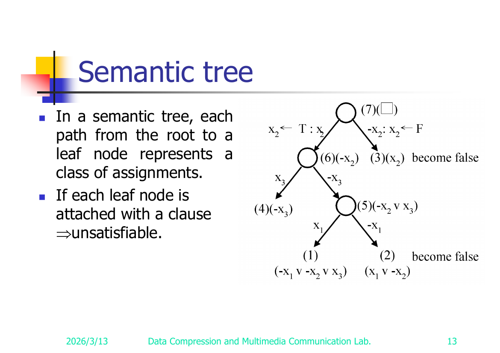
- In a semantic tree, each path from root to a leaf represents a class of truth assignments (each level branches on one variable: true vs. false).在 semantic tree 裡，每一條從根到葉子的路徑就代表一類真假值指派（每往下一層就對一個變數分岔：true 還是 false）。
- If every leaf node can be attached (falsified by) some clause of the formula, then the formula is unsatisfiable (no assignment escapes contradiction).如果每一個葉節點都能掛上（被弄垮於）formula 裡的某個 clause，那這個 formula 就是 unsatisfiable——代表沒有任何一組指派躲得掉矛盾。
Nondeterministic Algorithms (slides 14–19)Nondeterministic 演算法 (slides 14–19)
A nondeterministic algorithm has two stages:一個 nondeterministic 演算法分成兩個階段：
- Guessing — magically choose a candidate solution.Guessing（猜）——像變魔術一樣直接挑出一個候選解。
- Checking — verify the guess deterministically.Checking（檢查）——用 deterministic 的方式驗證剛剛猜的對不對。
If the checking stage runs in polynomial time, the algorithm is an NP (nondeterministic polynomial) algorithm.只要 checking 階段能在 polynomial time 內跑完，這個演算法就是 NP (nondeterministic polynomial) 演算法。
NP problems are decision problems. Examples (slide 14): searching, MST, sorting, the satisfiability problem (SAT), the traveling salesperson problem (TSP).NP 問題都是 decision 問題。例子 (slide 14)：searching、MST、sorting、satisfiability problem (SAT)、traveling salesperson problem (TSP)。
Primitives (Horowitz & Sahni 1998, slide 16):幾個基本指令 (Horowitz & Sahni 1998, slide 16)：
Choice(S)— arbitrarily chooses one element of set S. (Time O(1).)Choice(S)— 從集合 S 裡隨便挑一個元素出來。（O(1) 時間。）Failure— signals an unsuccessful completion.Failure— 代表這條路失敗收場。Success— signals a successful completion.Success— 代表這條路成功收場。
A nondeterministic algorithm terminates unsuccessfully iff there exists no set of choices leading to a
Successsignal. A deterministic interpretation can be made by allowing unbounded parallelism (explore all choice paths at once).一個 nondeterministic 演算法會以失敗收場，若且唯若沒有任何一組 choice 能走到Success。你也可以用 deterministic 的角度來想它：只要假設有無限多的平行能力，把所有 choice 的路徑一次全部展開來跑就行了。
Nondeterministic Searching (slide 17)Nondeterministic Searching (slide 17)
j ← Choice(1 : n) /* guess */
if A(j) = x then Success /* check */
else Failure
Choice(1:n) is O(1); the check is O(1) ⇒ polynomial. So searching is an NP problem.Choice(1:n) 是 O(1)，檢查也是 O(1) ⇒ 整個是 polynomial。所以 searching 是 NP 問題。
Nondeterministic Sorting (slide 18)Nondeterministic Sorting (slide 18)
B ← 0
for i = 1 to n do // Guessing: scatter A into B by guessed positions
j ← Choice(1 : n)
if B[j] ≠ 0 then Failure // position already used
B[j] = A[i]
for i = 1 to n-1 do // Checking: verify B is sorted
if B[i] > B[i+1] then Failure
Success
Nondeterministic SAT (slide 19)Nondeterministic SAT (slide 19)
for i = 1 to n do // Guessing
xᵢ ← Choice(true, false)
if E(x₁, x₂, …, xₙ) is true // Checking
then Success
else Failure
Decision version of sorting (slide 15)sorting 的 decision 版本 (slide 15)
Given
a₁, a₂, …, aₙandC, is there a permutation(a₁, a₂, …, aₙ)such that|a₂ − a₁| + |a₃ − a₂| + … + |aₙ − a_{n−1}| < C?給你a₁, a₂, …, aₙ和一個C，存不存在一種排列(a₁, a₂, …, aₙ)讓|a₂ − a₁| + |a₃ − a₂| + … + |aₙ − a_{n−1}| < C？
Not all decision problems are NP — the Halting Problem (slide 15)不是每個 decision 問題都是 NP — Halting Problem (slide 15)
Halting problem: Given a program with certain input data, will the program terminate or not?Halting problem：給你一個程式加上某組輸入資料，問這個程式到底會不會停下來？
- It is NP-hard (every NP problem reduces to it).它是 NP-hard（每個 NP 問題都能 reduce 到它）。
- It is undecidable — so it is not in NP (no algorithm, deterministic or not, decides it). This shows NP-hard ⊋ NP-complete: a problem can be NP-hard yet lie outside NP.但它是 undecidable（不可判定）——所以它不在 NP 裡（不管 deterministic 還是 nondeterministic，根本沒有演算法能判定它）。這正好說明了 NP-hard ⊋ NP-complete：一個問題可以是 NP-hard，卻落在 NP 之外。
Cook's Theorem (slide 20)Cook's Theorem (slide 20)
Cook's Theorem: NP = P iff the satisfiability problem is a P problem.Cook's Theorem：NP = P 若且唯若 satisfiability problem 是一個 P 問題。
Consequences:由此可以推出：
- SAT is NP-complete.SAT 是 NP-complete。
- It is the first NP-complete problem.它是第一個被證出來的 NP-complete 問題。
- Every NP problem reduces to SAT (every NP problem → SAT).每個 NP 問題都能 reduce 到 SAT（every NP problem → SAT）。
Why every NP problem → SAT (slides 34)為什麼每個 NP 問題都 → SAT (slides 34)
- Every NP problem can be solved by an NP (nondeterministic polynomial) algorithm.每個 NP 問題都能用一個 NP（nondeterministic polynomial）演算法來解。
- Every NP algorithm can be transformed in polynomial time into a SAT instance (Horowitz & Sahni 1998)…而每個 NP 演算法都能在 polynomial 時間內轉成一個 SAT instance（Horowitz & Sahni 1998）……
- …such that the SAT instance is satisfiable iff the answer to the original NP problem is "Yes."……而且轉出來的這個 SAT instance 是 satisfiable，若且唯若原本那個 NP 問題的答案是「Yes」。
- Therefore every NP problem → SAT, hence SAT is NP-complete.所以每個 NP 問題 → SAT，於是 SAT 就是 NP-complete。
Worked Example — Transforming Searching into SAT (slides 21–24)實例 — 把 Searching 轉成 SAT (slides 21–24)
Problem: Does there exist a number in { x(1), x(2), …, x(n) } equal to 7? Take n = 2.問題：在 { x(1), x(2), …, x(n) } 裡有沒有一個數等於 7？這裡取 n = 2。
The nondeterministic search algorithm is encoded as a Boolean formula. Logical form (slide 22):我們把 nondeterministic 的 search 演算法編碼成一個布林 formula。邏輯式長這樣 (slide 22)：
i=1 ∨ i=2
∧ i=1 → i≠2
∧ i=2 → i≠1
∧ x(1)=7 ∧ i=1 → SUCCESS
∧ x(2)=7 ∧ i=2 → SUCCESS
∧ x(1)≠7 ∧ i=1 → FAILURE
∧ x(2)≠7 ∧ i=2 → FAILURE
∧ FAILURE → ¬SUCCESS
∧ SUCCESS (guarantees a successful termination)
∧ x(1)=7 (input data)
∧ x(2)≠7 (input data)
Rewritten as CNF (slide 23) — using (A → B) ≡ (¬A ∨ B):用 (A → B) ≡ (¬A ∨ B) 改寫成 CNF (slide 23)：
i=1 ∨ i=2 (1)
i≠1 ∨ i≠2 (2)
x(1)≠7 ∨ i≠1 ∨ SUCCESS (3)
x(2)≠7 ∨ i≠2 ∨ SUCCESS (4)
x(1)=7 ∨ i≠1 ∨ FAILURE (5)
x(2)=7 ∨ i≠2 ∨ FAILURE (6)
¬FAILURE ∨ ¬SUCCESS (7)
SUCCESS (8)
x(1)=7 (9)
x(2)≠7 (10)
Satisfying assignment (slide 24):滿足這個 formula 的指派 (slide 24)：
| Assign指派 | Satisfies clauses滿足哪些 clause |
|---|---|
i=1 |
(1) |
i≠2 |
(2), (4), (6) |
SUCCESS |
(3), (4), (8) |
¬FAILURE |
(7) |
x(1)=7 |
(5), (9) |
x(2)≠7 |
(4), (10) |
The formula is satisfiable ⇒ "Yes, 7 is present" (it is x(1)).這個 formula 是 satisfiable ⇒ 「有，7 在裡面」（就是 x(1)）。
Variant A — both inputs ≠ 7 ⇒ unsatisfiable via resolution (slides 26–27)變形 A — 兩個輸入都 ≠ 7 ⇒ 用 resolution 證 unsatisfiable (slides 26–27)
Searching for 7 but x(1)≠7, x(2)≠7. CNF (note clauses (9),(10) flip to x(1)≠7, x(2)≠7, and (7)=SUCCESS, (8)=¬SUCCESS ∨ ¬FAILURE):一樣找 7，但這次 x(1)≠7, x(2)≠7。CNF（注意 clause (9)、(10) 翻成 x(1)≠7、x(2)≠7，而且 (7)=SUCCESS、(8)=¬SUCCESS ∨ ¬FAILURE）：
i=1 ∨ i=2 (1)
i≠1 ∨ i≠2 (2)
x(1)≠7 ∨ i≠1 ∨ SUCCESS (3)
x(2)≠7 ∨ i≠2 ∨ SUCCESS (4)
x(1)=7 ∨ i≠1 ∨ FAILURE (5)
x(2)=7 ∨ i≠2 ∨ FAILURE (6)
SUCCESS (7)
¬SUCCESS ∨ ¬FAILURE (8)
x(1)≠7 (9)
x(2)≠7 (10)
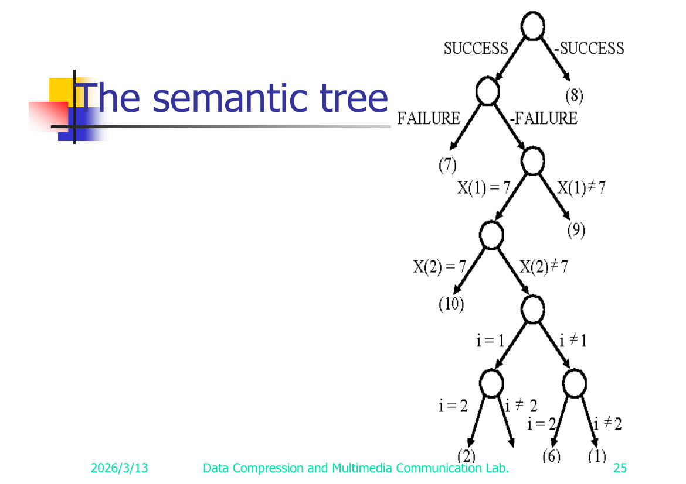
Apply resolution (slide 27):套用 resolution (slide 27)：
(9)&(5) ⊢ i≠1 ∨ FAILURE (11)
(10)&(6) ⊢ i≠2 ∨ FAILURE (12)
(7)&(8) ⊢ ¬FAILURE (13)
(13)&(11) ⊢ i≠1 (14)
(13)&(12) ⊢ i≠2 (15)
(14)&(1) ⊢ i=2 (16)
(15)&(16) ⊢ □ (17)
Empty clause □ ⇒ unsatisfiable ⇒ 7 does not exist in x(1) or x(2). Correct.推出空 clause □ ⇒ unsatisfiable ⇒ x(1)、x(2) 裡都沒有 7。答案正確。
⚠️ Reconstructed: the dump labels two derived lines both "(11)" and then "(16)"; per the deduction chain the lines are renumbered (11)–(17) as above (slide 27).⚠️ 重建說明：原始檔把兩條推導出來的式子都標成「(11)」、又都標成「(16)」；這裡依照推導的順序把它們重新編號成上面的 (11)–(17)（slide 27）。
Variant B — both inputs = 7 ⇒ satisfiable, both i=1 and i=2 work (slides 28–29)變形 B — 兩個輸入都 = 7 ⇒ satisfiable，i=1 跟 i=2 都行 (slides 28–29)
Searching for 7 where x(1)=7, x(2)=7. CNF:一樣找 7，但這次 x(1)=7, x(2)=7。CNF：
i=1 ∨ i=2 (1)
i≠1 ∨ i≠2 (2)
x(1)≠7 ∨ i≠1 ∨ SUCCESS (3)
x(2)≠7 ∨ i≠2 ∨ SUCCESS (4)
x(1)=7 ∨ i≠1 ∨ FAILURE (5)
x(2)=7 ∨ i≠2 ∨ FAILURE (6)
SUCCESS (7)
¬SUCCESS ∨ ¬FAILURE (8)
x(1)=7 (9)
x(2)=7 (10)
The semantic tree shows both assignments (i=1 and i=2) satisfy the clauses — either index witnesses the answer "Yes."semantic tree 顯示 i=1 跟 i=2 兩種指派都能滿足所有 clause——隨便哪個 index 都能當作答案「Yes」的見證。
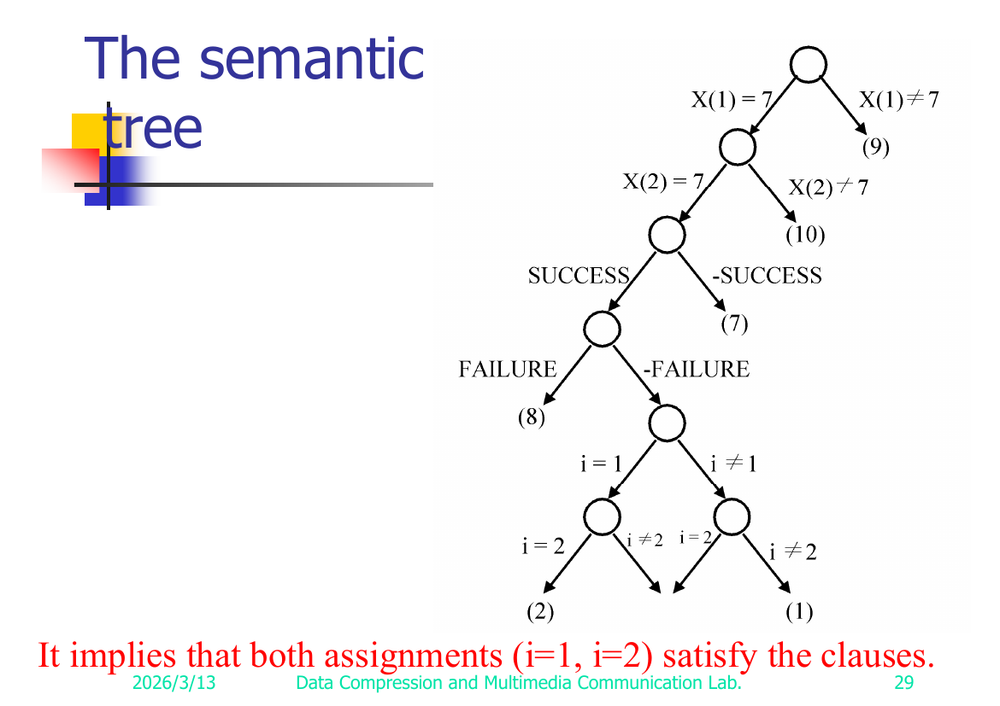
Proving a problem A is NP-complete (slide 35)怎麼證明一個問題 A 是 NP-complete (slide 35)
To show A is NP-complete:要證明 A 是 NP-complete，你要做兩件事：
- (I) Prove A ∈ NP (give a nondeterministic polynomial algorithm / poly-time checker).(I) 證明 A ∈ NP（給一個 nondeterministic polynomial 演算法，或一個 poly-time 的檢查器）。
- (II) Prove that some known B ∈ NPC reduces to A, i.e. B → A.(II) 證明某個已知的 B ∈ NPC 能 reduce 到 A，也就是 B → A。
Then A ∈ NPC.這樣就能得到 A ∈ NPC。
Why this works: (II) shows A is at least as hard as an already-hardest problem B, so A is NP-hard; (I) places it inside NP. Together ⇒ NP-complete.為什麼這樣就成立：(II) 說明 A 至少跟一個本來就最難的問題 B 一樣難，所以 A 是 NP-hard；(I) 把它擺進 NP 裡。兩個合起來 ⇒ NP-complete。
Caution (slide 43): If a problem is NP-complete, its special cases may or may not be NP-complete.小心 (slide 43)：一個問題就算是 NP-complete，它的特例不見得也是 NP-complete（可能是、也可能不是）。
Reduction 1 — SAT → 3-SAT (slides 36–42)Reduction 1 — SAT → 3-SAT (slides 36–42)
3-SAT: SAT where each clause has exactly three literals.3-SAT：就是限制每個 clause 剛好有三個 literal 的 SAT。
(I) 3-SAT ∈ NP — obvious (it is a restricted SAT; guess + check in poly time).(I) 3-SAT ∈ NP — 這很明顯（它就是被限制過的 SAT；一樣猜一組再用 poly 時間檢查）。
(II) SAT → 3-SAT — Construction. Convert each clause of a SAT instance into a set of 3-literal clauses by padding with new variables yᵢ, by clause size:(II) SAT → 3-SAT — 建構方法。把 SAT instance 裡的每個 clause 都改寫成一組「剛好三個 literal」的 clause，做法是塞進新變數 yᵢ 來補位，依 clause 大小分情況：
1 literal L₁ → 4 clauses with 2 fresh variables y₁, y₂ (all four sign combos):只有 1 個 literal L₁ → 用 2 個新變數 y₁, y₂ 拆成 4 個 clause（正負號四種組合都來一遍）：
L₁ ∨ y₁ ∨ y₂
L₁ ∨ ¬y₁ ∨ y₂
L₁ ∨ y₁ ∨ ¬y₂
L₁ ∨ ¬y₁ ∨ ¬y₂
2 literals L₁, L₂ → 2 clauses with 1 fresh variable y₁:2 個 literal L₁, L₂ → 用 1 個新變數 y₁ 拆成 2 個 clause：
L₁ ∨ L₂ ∨ y₁
L₁ ∨ L₂ ∨ ¬y₁
3 literals → unchanged.3 個 literal → 原封不動。
More than 3 literals L₁, L₂, …, Lₖ → chain with k−3 fresh variables y₁ … y_{k−3}:超過 3 個 literal L₁, L₂, …, Lₖ → 用 k−3 個新變數 y₁ … y_{k−3} 串成一條鏈：
L₁ ∨ L₂ ∨ y₁
L₃ ∨ ¬y₁ ∨ y₂
L₄ ∨ ¬y₂ ∨ y₃
⋮
L_{k−2} ∨ ¬y_{k−4} ∨ y_{k−3}
L_{k−1} ∨ Lₖ ∨ ¬y_{k−3}
Worked example (slides 39). SAT instance:實際例子 (slides 39)。SAT instance：
x₁ ∨ x₂
¬x₃
x₁ ∨ ¬x₂ ∨ x₃ ∨ ¬x₄ ∨ x₅
Transformed 3-SAT instance:轉出來的 3-SAT instance：
x₁ ∨ x₂ ∨ y₁ (from 2-literal clause)
x₁ ∨ x₂ ∨ ¬y₁
¬x₃ ∨ y₂ ∨ y₃ (from 1-literal clause ¬x₃)
¬x₃ ∨ ¬y₂ ∨ y₃
¬x₃ ∨ y₂ ∨ ¬y₃
¬x₃ ∨ ¬y₂ ∨ ¬y₃
x₁ ∨ ¬x₂ ∨ y₄ (from 5-literal clause, chained)
x₃ ∨ ¬y₄ ∨ y₅
¬x₄ ∨ x₅ ∨ ¬y₅
Correctness — S satisfiable ⇔ S′ satisfiable (slides 40–42).正確性 — S satisfiable ⇔ S′ satisfiable (slides 40–42)。
- (⇒) Given a satisfying assignment of the original clause
S = L₁ ∨ … ∨ Lₖ(k ≥ 4), at least oneLᵢ = T. Assign the chain variables so the new clauses are all satisfied:(⇒) 假設原本那個 clauseS = L₁ ∨ … ∨ Lₖ（k ≥ 4）有一組滿足的指派，那至少有一個Lᵢ = T。我們就把鏈上的變數設成讓所有新 clause 都被滿足： - set
y_{i−1} = F,設y_{i−1} = F， - set
yⱼ = Tforj ≤ i−1... (reconstructed reading; see note) — concretely, setyⱼ = Tfor the clauses before Lᵢ's clause andyⱼ = Ffor those after, which is exactly what is needed because the clause containingLᵢisLᵢ ∨ ¬y_{i−2} ∨ y_{i−1}andLᵢ = Talready satisfies it. Hence S′ is satisfiable.設yⱼ = T（當j ≤ i−1）……（這是重建的讀法，見下方說明）——具體講，就是 Lᵢ 所在那個 clause 之前的yⱼ全設 T、之後的全設 F。這樣剛好夠用，因為含Lᵢ的那個 clause 是Lᵢ ∨ ¬y_{i−2} ∨ y_{i−1}，而Lᵢ = T本身就已經把它滿足了。所以 S′ 是 satisfiable。 - (3-literal and shorter clauses are trivial: any satisfying literal carries over; the fresh y's can be set freely.)（3 個以下 literal 的 clause 很簡單：原本滿足的 literal 直接照搬過來，新加的 y 隨便設都行。）
- (⇐) If S′ is satisfiable, a satisfying assignment cannot rely on the
yᵢ's alone — because the chain forces a contradiction (resolving the chain on all theyᵢ's yieldsL₁ ∨ … ∨ Lₖ, the empty padding cancels). Therefore at least one originalLᵢmust be true, so S is satisfiable. (The resolution principle can also be applied to show this.)(⇐) 反過來，如果 S′ 是 satisfiable，那滿足它的指派不可能只靠yᵢ撐——因為整條鏈會逼出矛盾（把鏈上所有yᵢ做 resolution，補位的部分會互相抵消，最後留下L₁ ∨ … ∨ Lₖ）。所以一定有某個原本的Lᵢ為真，於是 S 也是 satisfiable。（這點也可以用 resolution principle 來證。）
⇒ 3-SAT is NP-complete.⇒ 3-SAT 是 NP-complete。
⚠️ Reconstructed: the (⇒) chain-variable assignment on slide 41 is heavily garbled in the dump (
yi-1=F,yj=T ∀j≤i-1,yj=F ∀j>i-1with a(∵ Li ∨ ¬yi-2 ∨ yi-1)hint). The reconstruction above (set y's true before, false after the true-literal's clause) is the standard textbook argument; validate against slide 41.⚠️ 重建說明：slide 41 上 (⇒) 那段鏈變數的指派在原始檔裡爛得很嚴重（只剩yi-1=F、yj=T ∀j≤i-1、yj=F ∀j>i-1加上一個(∵ Li ∨ ¬yi-2 ∨ yi-1)的提示）。上面這個重建（真 literal 那個 clause 之前的 y 設真、之後設假）是課本標準論證；記得對照 slide 41 確認一下。
Reduction 2 — SATY (≤ 3 literals/clause) → Chromatic Number (CN) (slides 44–49)Reduction 2 — SATY（每個 clause ≤ 3 個 literal）→ Chromatic Number (CN) (slides 44–49)
Coloring / Chromatic Number (slides 44–45). A coloring of G=(V,E) is f : V → {1,…,k} with f(u) ≠ f(v) whenever (u,v) ∈ E. The CN decision problem: does G have a coloring with k colors?Coloring / Chromatic Number (slides 44–45)。對圖 G=(V,E) 的一個 coloring（著色）就是一個函數 f : V → {1,…,k}，而且只要 (u,v) ∈ E（兩點相鄰）就要 f(u) ≠ f(v)（顏色不同）。CN decision 問題：G 能不能用 k 種顏色著色？
Example (slide 45): a graph is 3-colorable with
f(a)=1, f(b)=2, f(c)=1, f(d)=2, f(e)=3.例子 (slide 45)：這個圖用f(a)=1, f(b)=2, f(c)=1, f(d)=2, f(e)=3就能 3 色著色。
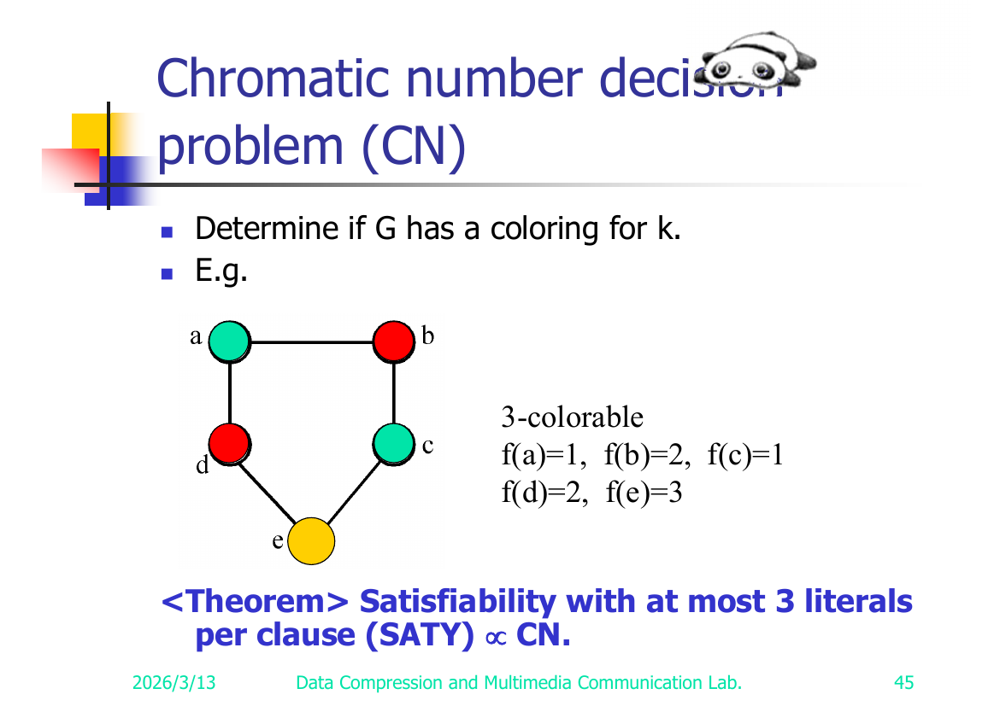
Theorem: Satisfiability with at most 3 literals per clause (SATY) → CN.定理：每個 clause 最多 3 個 literal 的 satisfiability（SATY） → CN。
Construction (slide 46). Instance of SATY: variables x₁,…,xₙ (with n ≥ 4), clauses c₁,…,c_r. Build graph G=(V,E):建構方法 (slide 46)。給一個 SATY instance：變數 x₁,…,xₙ（其中 n ≥ 4），clause c₁,…,c_r。我們蓋一個圖 G=(V,E)：
Vertices:點：
V = { x₁, …, xₙ } (positive-literal vertices)
∪ { ¬x₁, …, ¬xₙ } (negative-literal vertices)
∪ { y₁, …, yₙ } (newly added "palette" vertices)
∪ { c₁, …, c_r } (clause vertices)
Edges:邊：
E = { (xᵢ, ¬xᵢ) | 1 ≤ i ≤ n } // a variable and its negation conflict
∪ { (yᵢ, yⱼ) | i ≠ j } // all yᵢ mutually adjacent (form a clique)
∪ { (yᵢ, xⱼ) | i ≠ j } // yᵢ adjacent to every xⱼ except xᵢ
∪ { (yᵢ, ¬xⱼ) | i ≠ j } // yᵢ adjacent to every ¬xⱼ except ¬xᵢ
∪ { (xᵢ, cⱼ) | xᵢ ∉ cⱼ } // clause vertex joined to literals NOT in it
∪ { (¬xᵢ, cⱼ) | ¬xᵢ ∉ cⱼ }
✅ Verified against slides 46 & 47. Slide 46 prints the edge set verbatim:
E = {(xᵢ,¬xᵢ)|1≤i≤n} ∪ {(yᵢ,yⱼ)|i≠j} ∪ {(yᵢ,xⱼ)|i≠j} ∪ {(yᵢ,¬xⱼ)|i≠j} ∪ {(xᵢ,cⱼ)|xᵢ∉cⱼ} ∪ {(¬xᵢ,cⱼ)|¬xᵢ∉cⱼ}. The clause-vertex edges use∉(joined to literals NOT in the clause) exactly as reconstructed. Slide 47's drawn graph + 5-coloring confirms the worked instance. See Appendix A — Slide 47.✅ 已對照 slide 46 跟 47。slide 46 一字不差地印出了邊集合：E = {(xᵢ,¬xᵢ)|1≤i≤n} ∪ {(yᵢ,yⱼ)|i≠j} ∪ {(yᵢ,xⱼ)|i≠j} ∪ {(yᵢ,¬xⱼ)|i≠j} ∪ {(xᵢ,cⱼ)|xᵢ∉cⱼ} ∪ {(¬xᵢ,cⱼ)|¬xᵢ∉cⱼ}。clause 點的邊用的是∉（連到那些不在該 clause 裡的 literal），跟我們重建的完全一樣。slide 47 畫的圖加上 5 色著色也印證了這個實例。見 Appendix A — Slide 47。✅ Worked example (slide 47, verified): clauses
(1) x₁ ∨ x₂ ∨ x₃and(2) ¬x₃ ∨ ¬x₄ ∨ x₂, n=4. The deck draws the resulting graph (8 literal vertices, the y₁..y₄ clique, clause nodes c₁,c₂ wired to non-member literals) with a 5-coloring: x₁=1, x₂=5, x₃=5, x₄=4, ¬x₁=5, ¬x₂=2, ¬x₃=3, ¬x₄=5, y₁..y₄=1..4, c₁=1, c₂=3 — encoding the assignment x₁=T, x₂=F, x₃=F, x₄=T. Full transcription + edge list in Appendix A — Slide 47.✅ 實際例子（slide 47，已驗證）：clause(1) x₁ ∨ x₂ ∨ x₃和(2) ¬x₃ ∨ ¬x₄ ∨ x₂，n=4。投影片畫出對應的圖（8 個 literal 點、y₁..y₄ 構成的 clique、clause 點 c₁,c₂ 連到非成員的 literal），並給了一個 5 色著色：x₁=1, x₂=5, x₃=5, x₄=4, ¬x₁=5, ¬x₂=2, ¬x₃=3, ¬x₄=5, y₁..y₄=1..4, c₁=1, c₂=3——這正好編碼出指派 x₁=T, x₂=F, x₃=F, x₄=T。完整轉錄＋邊清單在 Appendix A — Slide 47。
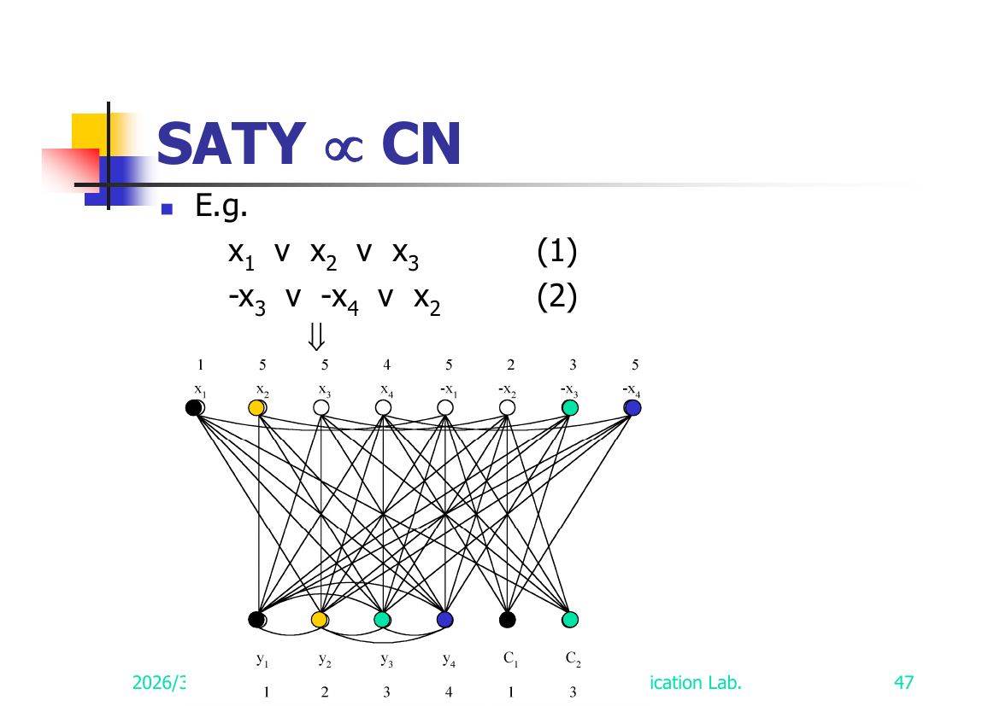
Claim: satisfiable ⇔ (n+1)-colorable.主張：satisfiable ⇔ 可 (n+1) 色著色。
(⇒) Satisfiable → (n+1)-colorable (slide 48). Given a satisfying assignment, color:
1. f(yᵢ) = i.
2. If xᵢ = T then f(xᵢ) = i, f(¬xᵢ) = n+1; else f(xᵢ) = n+1, f(¬xᵢ) = i.
3. For each clause cⱼ: pick a literal in cⱼ that is true. If xᵢ ∈ cⱼ and xᵢ = T, set f(cⱼ) = f(xᵢ); if ¬xᵢ ∈ cⱼ and ¬xᵢ = T, set f(cⱼ) = f(¬xᵢ). (A satisfied clause has at least one such true literal.)(⇒) Satisfiable → 可 (n+1) 色著色 (slide 48)。拿到一組滿足的指派後，這樣著色：
1. f(yᵢ) = i。
2. 如果 xᵢ = T 就設 f(xᵢ) = i, f(¬xᵢ) = n+1；否則 f(xᵢ) = n+1, f(¬xᵢ) = i。
3. 每個 clause cⱼ：挑一個在 cⱼ 裡為真的 literal。若 xᵢ ∈ cⱼ 且 xᵢ = T，設 f(cⱼ) = f(xᵢ)；若 ¬xᵢ ∈ cⱼ 且 ¬xᵢ = T，設 f(cⱼ) = f(¬xᵢ)。（一個被滿足的 clause 至少有一個這種為真的 literal。）
This uses colors {1,…,n+1} and respects all edges ⇒ (n+1)-colorable.這只用到 {1,…,n+1} 這些顏色，而且每條邊都沒衝突 ⇒ 可 (n+1) 色著色。
(⇐) (n+1)-colorable → Satisfiable (slide 49). Given an (n+1)-coloring:
1. Each yᵢ must get color i (the y's form a clique adjacent to all literals except their own index, forcing the palette).
2. f(xᵢ) ≠ f(¬xᵢ) (they are adjacent); so for each i either f(xᵢ)=i, f(¬xᵢ)=n+1 or f(xᵢ)=n+1, f(¬xᵢ)=i.
3. Each clause has at most 3 literals and n ≥ 4, so there is at least one variable xᵢ with neither xᵢ nor ¬xᵢ in cⱼ; hence cⱼ is adjacent to both xᵢ and ¬xᵢ, one of which has color n+1 ⇒ f(cⱼ) ≠ n+1, so f(cⱼ) = i for some i ≤ n.
4. Read off the assignment: if f(cⱼ) = i = f(xᵢ), set xᵢ = T; if f(cⱼ) = i = f(¬xᵢ), set ¬xᵢ = T.
5. Since f(cⱼ)=i=f(xᵢ) means (cⱼ, xᵢ) ∉ E, i.e. xᵢ ∈ cⱼ, the chosen literal is actually in cⱼ and is true ⇒ cⱼ is satisfied. (Symmetric for ¬xᵢ.)(⇐) 可 (n+1) 色著色 → Satisfiable (slide 49)。拿到一個 (n+1) 色著色後：
1. 每個 yᵢ 一定是顏色 i（這些 y 構成一個 clique，而且各自跟除了自己索引以外的所有 literal 相鄰，這就把調色盤逼定了）。
2. f(xᵢ) ≠ f(¬xᵢ)（它們相鄰）；所以對每個 i，要嘛 f(xᵢ)=i, f(¬xᵢ)=n+1，要嘛 f(xᵢ)=n+1, f(¬xᵢ)=i。
3. 每個 clause 最多 3 個 literal，而 n ≥ 4，所以至少有一個變數 xᵢ，它的 xᵢ 跟 ¬xᵢ 都不在 cⱼ 裡；因此 cⱼ 同時跟 xᵢ 和 ¬xᵢ 相鄰，這兩個之中有一個顏色是 n+1 ⇒ f(cⱼ) ≠ n+1，所以 f(cⱼ) = i（某個 i ≤ n）。
4. 讀出指派：若 f(cⱼ) = i = f(xᵢ)，設 xᵢ = T；若 f(cⱼ) = i = f(¬xᵢ)，設 ¬xᵢ = T。
5. 因為 f(cⱼ)=i=f(xᵢ) 就代表 (cⱼ, xᵢ) ∉ E，也就是 xᵢ ∈ cⱼ，所以挑到的 literal 真的在 cⱼ 裡而且為真 ⇒ cⱼ 被滿足。（¬xᵢ 的情況對稱。）
⇒ the formula is satisfiable. Hence CN is NP-complete. ∎⇒ 這個 formula 是 satisfiable。於是 CN 是 NP-complete。∎
Reduction 3 — Node Cover → SAT (slides 30–33)Reduction 3 — Node Cover → SAT (slides 30–33)
This shows how the node cover decision problem is encoded as a SAT instance (it is the "every NP problem → SAT" recipe applied concretely to node cover; equivalently it certifies node cover ∈ NP).這一段示範怎麼把 node cover decision 問題編碼成一個 SAT instance（其實就是把「every NP problem → SAT」那套配方實際套在 node cover 上；換句話說，這也等於證明了 node cover ∈ NP）。
Node cover (slide 30). Given G=(V,E), S ⊆ V is a node cover if for every edge (u,v) ∈ E, u ∈ S or v ∈ S. Decision version: does there exist S with |S| ≤ K?Node cover (slide 30)。給一個圖 G=(V,E)，若對每條邊 (u,v) ∈ E 都有 u ∈ S 或 v ∈ S，那 S ⊆ V 就是一個 node cover（簡單講就是每條邊至少有一端被 S 蓋到）。Decision 版本：存不存在一個 S 滿足 |S| ≤ K？
Example (slide 30): node covers
{1,3}and{5,2,4}.例子 (slide 30)：node cover 有{1,3}和{5,2,4}。
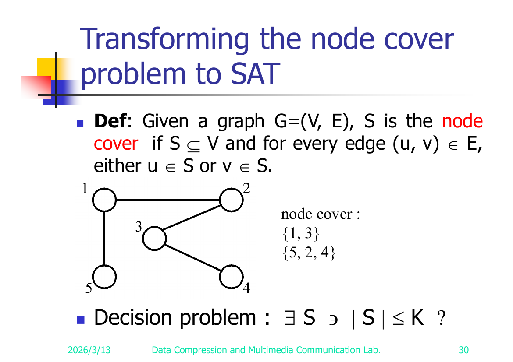
Nondeterministic construction (slide 31) — guess K vertices, check every edge is covered:Nondeterministic 建構 (slide 31)——先猜 K 個點，再檢查每條邊都被蓋到：
BEGIN
i₁ ← Choice({1, 2, …, n})
i₂ ← Choice({1, 2, …, n} − {i₁})
⋮
i_k ← Choice({1, 2, …, n} − {i₁, i₂, …, i_{k−1}})
For j = 1 to m do
BEGIN
if eⱼ is not incident to one of the iₜ (1 ≤ t ≤ k)
then FAILURE
END
SUCCESS
END
The corresponding CNF (slides 32–33). Encode "the t-th chosen vertex iₜ equals some value in 1..n", "the choices are distinct", "every edge is covered, else FAILURE", and the success/failure bookkeeping:對應的 CNF (slides 32–33)。把這幾件事編碼進去：「第 t 個挑到的點 iₜ 取到 1..n 裡某個值」、「每次挑的都不重複」、「每條邊都要被蓋到，否則 FAILURE」，再加上 success/failure 的記帳：
(A) Each iₜ takes some value (one clause per t):
i₁=1 ∨ i₁=2 ∨ … ∨ i₁=n
i₂=1 ∨ i₂=2 ∨ … ∨ i₂=n
⋮
i_k=1 ∨ i_k=2 ∨ … ∨ i_k=n
(intended meaning: i₁≠1 ⇒ i₁=2 ∨ i₁=3 ∨ … ∨ i₁=n, etc.)
(B) Distinctness — no value chosen twice (pairwise):
i₁≠1 ∨ i₂≠1
i₁≠1 ∨ i₃≠1
⋮
i_{k−1}≠n ∨ i_k≠n
(intended: i₁=1 ⇒ i₂≠1 ∧ … ∧ i_k≠1, …)
(C) Edge coverage — for each edge eⱼ=(rⱼ, sⱼ), some chosen vertex must be an endpoint, else FAILURE:
i₁≠e₁ ∨ i₂≠e₁ ∨ … ∨ i_k≠e₁ ∨ FAILURE
(i.e. (i₁∉e₁ ∧ i₂∉e₁ ∧ … ∧ i_k∉e₁) → FAILURE )
i₁≠e₂ ∨ i₂≠e₂ ∨ … ∨ i_k≠e₂ ∨ FAILURE
⋮
i₁≠e_m ∨ i₂≠e_m ∨ … ∨ i_k≠e_m ∨ FAILURE
(D) Success / failure bookkeeping (slide 33):
SUCCESS
¬SUCCESS ∨ ¬FAILURE
r₁ ∈ e₁ , s₁ ∈ e₁ (endpoints of each edge — input data)
r₂ ∈ e₂ , s₂ ∈ e₂
⋮
r_m ∈ e_m , s_m ∈ e_m
The SAT instance is satisfiable iff there is a choice of k vertices covering all edges iff G has a node cover of size ≤ k. This is the per-problem instance of Cook's "every NP problem → SAT."這個 SAT instance 是 satisfiable，若且唯若能挑出 k 個點蓋住所有邊，也就是 G 有一個大小 ≤ k 的 node cover。這就是 Cook 那句「every NP problem → SAT」套在單一問題上的實例。
⚠️ Reconstructed: the entire CNF on slides 31–33 is fragmentary in the dump (the
=,≠,∈,∉glyphs are dropped; the "r/s ∈ e" lines on slide 33 are bare). The grouping (A)–(D) and the intended meanings above are reconstructed from the nondeterministic pseudocode and the standard encoding; validate clause-by-clause against slides 31–33.⚠️ 重建說明：slides 31–33 上的整段 CNF 在原始檔裡都破碎不全（=、≠、∈、∉這些符號都掉了；slide 33 上「r/s ∈ e」那幾行只剩光禿禿的字母）。上面的 (A)–(D) 分組跟各自的意思，是我依照 nondeterministic 虛擬碼加上標準編碼重建出來的；記得逐條對照 slides 31–33 確認。
Reduction 4 — CN → Exact Cover (slides 50–51)Reduction 4 — CN → Exact Cover (slides 50–51)
Set cover decision problem (slide 50). A family F = {S₁, S₂, …, S_k} over universe ⋃_{Sᵢ∈F} Sᵢ = {u₁, u₂, …, uₙ}. T ⊆ F is a set cover if ⋃_{Sᵢ∈T} Sᵢ = ⋃_{Sᵢ∈F} Sᵢ. Decision: does F have a cover T with ≤ C sets?Set cover decision 問題 (slide 50)。有一族集合 F = {S₁, S₂, …, S_k}，全集是 ⋃_{Sᵢ∈F} Sᵢ = {u₁, u₂, …, uₙ}。若 ⋃_{Sᵢ∈T} Sᵢ = ⋃_{Sᵢ∈F} Sᵢ，則 T ⊆ F 是一個 set cover（也就是 T 裡的集合聯集起來能蓋住全集）。Decision：F 有沒有一個只用 ≤ C 個集合的 cover T？
Example:
F = {(a₁,a₃), (a₂,a₄), (a₂,a₃), (a₄)} = {s₁, s₂, s₃, s₄}.T = {s₁, s₃, s₄}is a set cover.T = {s₁, s₂}is a set cover and an exact cover (disjoint, covers everything).例子：F = {(a₁,a₃), (a₂,a₄), (a₂,a₃), (a₄)} = {s₁, s₂, s₃, s₄}。T = {s₁, s₃, s₄}是一個 set cover。T = {s₁, s₂}既是 set cover、又是 exact cover（彼此不相交、又蓋住全部）。
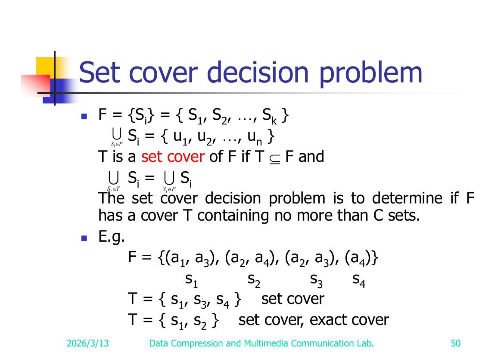
Exact cover problem (slide 51). Same notation. Determine if F has an exact cover T: a cover of F whose sets are pairwise disjoint.Exact cover 問題 (slide 51)。符號一樣。問 F 有沒有一個 exact cover T：一個能蓋住全部、而且裡面的集合兩兩不相交的 cover。
Theorem: CN → exact cover. (The deck states the theorem; the construction details are not expanded in the dump — see flagged items.)定理：CN → exact cover。（投影片只丟出這個定理；建構細節在原始檔裡沒展開——見下面標註的項目。）
⚠️ Reconstructed/Not fully shown: slide 51 only states "CN → exact cover" as a theorem with no construction in the dump. Validate whether slide 51 (or an animation) carries a construction; the deck appears to leave it as a stated result.⚠️ 重建／沒完整呈現：slide 51 只把「CN → exact cover」當定理講出來，原始檔裡沒有建構過程。請確認一下 slide 51（或某段動畫）是不是有附建構；看起來投影片就只把它當作一個結論寫著。
Reduction 5 — Exact Cover → Sum of Subsets (slides 52–54)Reduction 5 — Exact Cover → Sum of Subsets (slides 52–54)
Sum of subsets problem (slide 52). Given positive numbers A = {a₁, …, aₙ} and a constant C, determine if some subset A′ ⊆ A has Σ_{aᵢ∈A′} aᵢ = C.Sum of subsets 問題 (slide 52)。給一堆正數 A = {a₁, …, aₙ} 和一個常數 C，問能不能從 A 裡挑一個子集 A′ ⊆ A 讓 Σ_{aᵢ∈A′} aᵢ = C。
Example (slide 52):
A = {7, 5, 19, 1, 12, 8, 14}. ForC=21,A′={7,14}works. ForC=11, no solution.例子 (slide 52)：A = {7, 5, 19, 1, 12, 8, 14}。C=21時A′={7,14}就行。C=11時則無解。Theorem: Exact cover → sum of subsets.定理：Exact cover → sum of subsets。
Construction (slide 53). Instance of exact cover: F = {S₁,…,S_k} over universe {u₁,…,uₙ}. Build a sum-of-subsets instance A = {a₁,…,a_k} by encoding each set Sⱼ as a base-(k+1) number whose digit in position i flags membership of uᵢ:建構方法 (slide 53)。給一個 exact cover instance：F = {S₁,…,S_k}，全集 {u₁,…,uₙ}。我們蓋一個 sum-of-subsets instance A = {a₁,…,a_k}，做法是把每個集合 Sⱼ 編成一個 base-(k+1) 的數，第 i 位數字用來標記 uᵢ 在不在 Sⱼ 裡：
aⱼ = Σ_{i=1..n} eⱼᵢ · (k+1)^{i−1}, where eⱼᵢ = 1 if uᵢ ∈ Sⱼ, else 0
C = Σ_{i=0..n−1} (k+1)^i = ((k+1)ⁿ − 1) / k (all-ones in base k+1)
Why base (k+1)? There are k sets, so any subset of them sums at most k ones into any single digit position. Using base k+1 guarantees no carries across digit positions: a subset of A sums to C (the all-ones number) iff every universe element uᵢ is covered exactly once ⇒ exactly an exact cover. A smaller base could let carries fake a sum.為什麼要用 base (k+1)？因為總共只有 k 個集合，所以隨便挑一個子集，同一位數最多也只會疊上 k 個「1」。用 k+1 進位就保證不會進位到別的位數：A 的某個子集加起來剛好等於 C（那個全是 1 的數），若且唯若每個全集元素 uᵢ 都剛好被蓋一次 ⇒ 這正好就是 exact cover。如果 base 取太小，進位就可能假造出一個剛好的總和，騙過你。
Worked example (slide 54). u₁=1, u₂=2, u₃=3, n=3.實際例子 (slide 54)。u₁=1, u₂=2, u₃=3，n=3。
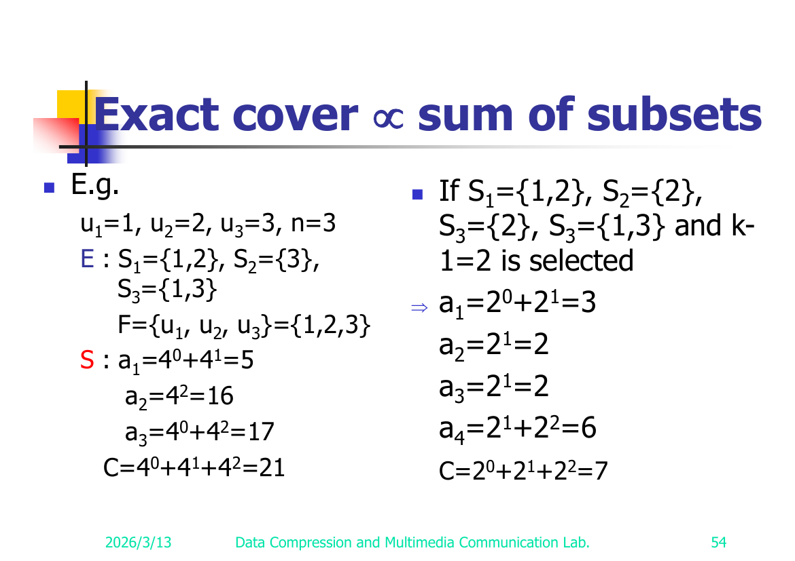
Variant E (k=3 sets): S₁={1,2}, S₂={3}, S₃={1,3}, F = {u₁,u₂,u₃} = {1,2,3}. Base k+1 = 4:變形 E（k=3 個集合）：S₁={1,2}, S₂={3}, S₃={1,3}，F = {u₁,u₂,u₃} = {1,2,3}。Base k+1 = 4：
a₁ = 4⁰ + 4¹ = 5 (S₁ covers u₁,u₂)
a₂ = 4² = 16 (S₂ covers u₃)
a₃ = 4⁰ + 4² = 17 (S₃ covers u₁,u₃)
C = 4⁰ + 4¹ + 4² = 21
a₁ + a₃ = 5 + 17 = 22 ≠ 21 and a₂ + ... — the exact cover {S₁, S₂} gives 5 + 16 = 21 = C. ✓ (sets disjoint, cover all)a₁ + a₃ = 5 + 17 = 22 ≠ 21，而 exact cover {S₁, S₂} 則是 5 + 16 = 21 = C。✓（集合不相交、又蓋住全部）
Variant (k chosen so k+1 = 2+1 = 3; 4 sets): S₁={1,2}, S₂={2}, S₃={2}, S₄={1,3}. Here the deck uses base k+1 with the indicated value:變形（這次 k 選成讓 k+1 = 2+1 = 3；4 個集合）：S₁={1,2}, S₂={2}, S₃={2}, S₄={1,3}。投影片這邊用了標示的那個 base k+1 值：
a₁ = 2⁰ + 2¹ = 3
a₂ = 2¹ = 2
a₃ = 2¹ = 2
a₄ = 2¹ + 2² = 6
C = 2⁰ + 2¹ + 2² = 7
Illustrates the role of the base (this variant deliberately uses a too-small base to show how collisions/carries arise).這個變形是在示範 base 的作用（它故意用太小的 base，讓你看到碰撞／進位是怎麼跑出來的）。
✅ Verified against slide 54. Exponent restorations are correct (
4⁰+4¹,4², base 4 in variant 1; base 2 in variant 2). The duplicated "S₃" in variant 2 is a typo on the slide itself (the 4th set is meant to be S₄={1,3}). The key takeaways (the formula and "why k+1") are confirmed. See Appendix A — Slide 54.✅ 已對照 slide 54。指數的還原是對的（變形 1 用 base 4 的4⁰+4¹、4²；變形 2 用 base 2）。變形 2 裡重複的「S₃」是投影片本身的 typo（第 4 個集合本來該是 S₄={1,3}）。最關鍵的重點（那條公式跟「為什麼是 k+1」）都確認無誤。見 Appendix A — Slide 54。
Reduction 6 — Sum of Subsets → Partition (slides 55–57)Reduction 6 — Sum of Subsets → Partition (slides 55–57)
Partition problem (slide 55). Given positive numbers A = {a₁,…,aₙ}, determine if there is a partition P with Σ_{i∈P} aᵢ = Σ_{i∉P} aᵢ (split A into two equal-sum halves).Partition 問題 (slide 55)。給一堆正數 A = {a₁,…,aₙ}，問能不能把它分成 P 跟其餘兩堆，使得 Σ_{i∈P} aᵢ = Σ_{i∉P} aᵢ（也就是切成兩半、兩邊總和相等）。
Example:
A = {1,3,8,4,10}partitions into{1,8,4}(sum 13) and{3,10}(sum 13).例子：A = {1,3,8,4,10}可以分成{1,8,4}（和 13）跟{3,10}（和 13）。Theorem: sum of subsets → partition.定理：sum of subsets → partition。
Construction (slide 56). Instance of sum of subsets: A = {a₁,…,aₙ}, C. Build a partition instance B = {b₁,…,b_{n+2}}:建構方法 (slide 56)。給一個 sum of subsets instance：A = {a₁,…,aₙ}, C。我們蓋一個 partition instance B = {b₁,…,b_{n+2}}：
bᵢ = aᵢ for 1 ≤ i ≤ n
b_{n+1} = C + 1
b_{n+2} = (Σ_{1≤i≤n} aᵢ) + 1 − C
Let Tsum = Σ aᵢ. Then Σ B = Tsum + (C+1) + (Tsum + 1 − C) = 2·Tsum + 2, so each side of a partition must sum to Tsum + 1.令 Tsum = Σ aᵢ。那麼 Σ B = Tsum + (C+1) + (Tsum + 1 − C) = 2·Tsum + 2，所以 partition 的每一邊都要加到 Tsum + 1。
Correctness. A subset S ⊆ A with Σ_S aᵢ = C exists iff B has a balanced partition:
- Put S ∪ {b_{n+2}} on one side: sum = C + (Tsum + 1 − C) = Tsum + 1. ✓
- The other side is (A∖S) ∪ {b_{n+1}}: sum = (Tsum − C) + (C+1) = Tsum + 1. ✓正確性。存在一個子集 S ⊆ A 滿足 Σ_S aᵢ = C，若且唯若 B 有一個對半平分的 partition：
- 把 S ∪ {b_{n+2}} 放一邊：和 = C + (Tsum + 1 − C) = Tsum + 1。✓
- 另一邊是 (A∖S) ∪ {b_{n+1}}：和 = (Tsum − C) + (C+1) = Tsum + 1。✓
So the partition is { bᵢ | aᵢ ∈ S } ∪ {b_{n+2}} and { bᵢ | aᵢ ∉ S } ∪ {b_{n+1}}.所以這個 partition 就是 { bᵢ | aᵢ ∈ S } ∪ {b_{n+2}} 跟 { bᵢ | aᵢ ∉ S } ∪ {b_{n+1}}。
Why b_{n+1} = C+1 and not C? (slide 57). To force b_{n+1} and b_{n+2} into different subsets. With the +1 offsets, b_{n+1} + b_{n+2} = (C+1) + (Tsum+1−C) = Tsum + 2 > Tsum + 1, so they cannot both be on the same side. This pins down the structure so a balanced partition of B corresponds exactly to a subset of A summing to C. (If we used C directly, the two padding numbers could land together and break the correspondence.)為什麼 b_{n+1} = C+1 而不是 C？(slide 57)就是為了逼 b_{n+1} 跟 b_{n+2} 一定要分到不同堆。加了 +1 之後，b_{n+1} + b_{n+2} = (C+1) + (Tsum+1−C) = Tsum + 2 > Tsum + 1，所以它們不可能同時擺在同一邊。這樣就把結構釘死，讓 B 的平分 partition 剛好對應到「A 裡某個子集加起來等於 C」。（如果直接用 C，這兩個補位的數就可能跑到同一堆，整個對應關係就壞了。）
Reduction 7 — Partition → Bin Packing (slide 58)Reduction 7 — Partition → Bin Packing (slide 58)
Bin packing problem (slide 58). n items, each of size cᵢ > 0; bin capacity C. Determine if the items can be assigned into k bins with Σ_{i∈binⱼ} cᵢ ≤ C for every 1 ≤ j ≤ k.Bin packing 問題 (slide 58)。有 n 個物品，每個大小 cᵢ > 0；每個 bin 的容量是 C。問能不能把這些物品塞進 k 個 bin，使得每個 bin 1 ≤ j ≤ k 都滿足 Σ_{i∈binⱼ} cᵢ ≤ C。
Theorem: partition → bin packing.定理：partition → bin packing。
Construction (reconstructed). Given a partition instance A = {a₁,…,aₙ} with total Tsum = Σ aᵢ, build a bin-packing instance with the same item sizes cᵢ = aᵢ, bin capacity C = Tsum / 2, and k = 2 bins.建構方法 （重建）。給一個 partition instance A = {a₁,…,aₙ}，總和 Tsum = Σ aᵢ，我們蓋一個 bin-packing instance：物品大小照搬 cᵢ = aᵢ，bin 容量 C = Tsum / 2，用 k = 2 個 bin。
Correctness (reconstructed). A is partitionable into two equal halves (each summing to Tsum/2) iff the n items fit into 2 bins each of capacity Tsum/2 (each bin must be exactly full, forcing an equal split).正確性 （重建）。A 能對半平分成兩堆（各加到 Tsum/2），若且唯若這 n 個物品塞得進兩個容量都是 Tsum/2 的 bin（每個 bin 都得剛好裝滿，這就逼出對半切）。
⚠️ Reconstructed: slide 58 states only the theorem "partition → bin packing"; the dump shows no construction. The 2-bins / capacity-Tsum/2 construction above is the standard one; validate against slide 58.⚠️ 重建說明：slide 58 只寫了「partition → bin packing」這個定理；原始檔裡沒有建構過程。上面那個「2 個 bin、容量 Tsum/2」是標準做法；記得對照 slide 58 確認。
Reduction 8 — Bin Packing → VLSI Discrete Layout (slides 59–60)Reduction 8 — Bin Packing → VLSI Discrete Layout (slides 59–60)
VLSI discrete layout problem (slide 59). Given n rectangles, each with integer height hᵢ and width wᵢ, and an area A, determine if there is a placement of the n rectangles within A obeying the 4 placement rules:VLSI discrete layout 問題 (slide 59)。給 n 個矩形，每個有整數高 hᵢ 和整數寬 wᵢ，再給一塊面積 A，問能不能把這 n 個矩形擺進 A 裡，而且遵守這 4 條擺放規則：
- Boundaries of rectangles are parallel to the x-axis or y-axis (axis-aligned).矩形的邊要平行於 x 軸或 y 軸（沿著座標軸擺，不能歪）。
- Corners lie on integer points.四個角都要落在整數點上。
- No two rectangles overlap.任兩個矩形不能重疊。
- Two rectangles are separated by at least a unit distance.任兩個矩形之間至少要隔一個單位距離。
The deck illustrates "A Successful Placement" (slide 60).投影片畫了一個「成功擺放的範例」(slide 60)。
Theorem: bin packing → VLSI discrete layout.定理：bin packing → VLSI discrete layout。
Idea (reconstructed). Encode each bin-packing item of size cᵢ as a rectangle (e.g. 1 × cᵢ), and the bins/capacity as the layout area A, so that a valid non-overlapping unit-separated placement exists iff the items pack into the bins. The discrete (integer-corner) + unit-separation rules make placement equivalent to discrete packing.想法 （重建）。把每個大小 cᵢ 的 bin-packing 物品編成一個矩形（例如 1 × cᵢ），再把 bin／容量編成 layout 面積 A，這樣一來，存在一個合法、不重疊、又隔開一個單位的擺放，就剛好對應到那些物品塞得進 bin。整數角加上單位間隔這兩條規則，正好讓「擺放」等價於「離散的裝箱」。
⚠️ Reconstructed: slide 60 states only the theorem; no construction in the dump. The rectangle-per-item encoding is the standard intuition; validate against slide 60.⚠️ 重建說明：slide 60 只寫了定理；原始檔裡沒有建構過程。「一個物品配一個矩形」是標準直覺；記得對照 slide 60 確認。
Reduction 9 — SAT → Clique Decision (slide 61)Reduction 9 — SAT → Clique Decision (slide 61)
Max clique / clique (slide 61). A maximal complete subgraph of G=(V,E) is a clique. The max (maximum) clique problem asks for the size of the largest clique in G.Max clique / clique (slide 61)。圖 G=(V,E) 裡的一個 maximal complete subgraph（極大完全子圖）就叫做 clique。max（maximum）clique 問題就是在問 G 裡最大的 clique 有多大。
Example: maximal cliques
{a,b}, {a,c,d}, {c,d,e,f}; maximum clique{c,d,e,f}.例子：maximal clique 有{a,b}, {a,c,d}, {c,d,e,f}；其中 maximum clique 是{c,d,e,f}。
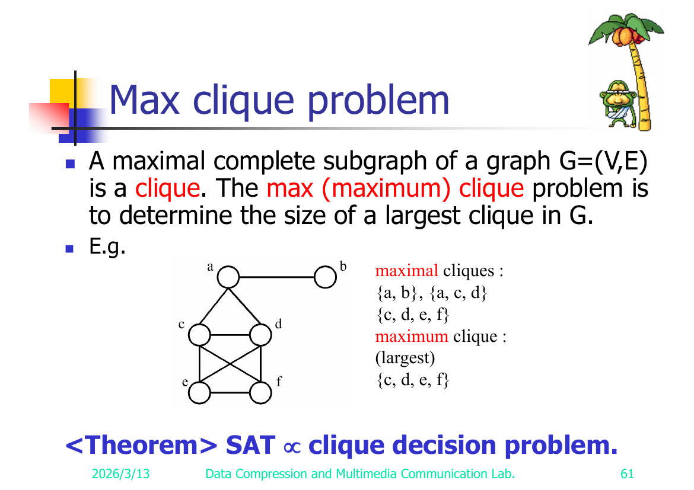
The clique decision problem: does G have a clique of size ≥ k?Clique decision 問題：G 有沒有一個大小 ≥ k 的 clique？
Theorem: SAT → clique decision problem.定理：SAT → clique decision problem。
Construction (reconstructed, standard). Given a CNF formula with clauses c₁,…,c_m:
- Create a vertex for each literal occurrence in each clause.
- Add an edge between two literal-vertices iff they are in different clauses and are not complementary (not xᵢ vs ¬xᵢ).
- Ask for a clique of size k = m (number of clauses).建構方法 （重建，標準做法）。給一個 CNF formula，clause 是 c₁,…,c_m：
- 每個 clause 裡每一次出現的 literal 都開一個點。
- 兩個 literal 點之間連一條邊，若且唯若它們在不同 clause、而且不互補（不是 xᵢ 對上 ¬xᵢ）。
- 然後問有沒有大小 k = m（clause 數）的 clique。
Correctness (reconstructed). A clique of size m must pick exactly one literal from each clause, all mutually consistent (no variable and its negation) ⇒ a satisfying assignment; and conversely a satisfying assignment yields one true literal per clause forming an m-clique. So the formula is satisfiable iff G has an m-clique.正確性 （重建）。一個大小 m 的 clique 一定是從每個 clause 各挑剛好一個 literal，而且彼此都相容（不會同時含某變數跟它的否定）⇒ 這就湊出一組滿足的指派；反過來，一組滿足的指派會讓每個 clause 各有一個為真的 literal，這些 literal 剛好構成一個 m-clique。所以 formula satisfiable，若且唯若 G 有一個 m-clique。
⚠️ Reconstructed: slide 61 states only the theorem (with the max-clique example); no construction in the dump. The literal-vertex / inter-clause-non-conflict construction is the standard Cook/Karp one; validate against slide 61.⚠️ 重建說明：slide 61 只寫了定理（加上 max-clique 的例子）；原始檔裡沒有建構過程。「literal 當點、跨 clause 不衝突就連邊」是標準的 Cook/Karp 做法；記得對照 slide 61 確認。
Reduction 10 — Clique Decision → Node Cover Decision (slides 62–63)Reduction 10 — Clique Decision → Node Cover Decision (slides 62–63)
Node cover decision problem (slide 62). S ⊆ V is a node cover of G=(V,E) iff every edge of E is incident to at least one vertex of S. Decision: does there exist S with |S| ≤ K?Node cover decision 問題 (slide 62)。S ⊆ V 是 G=(V,E) 的一個 node cover，若且唯若 E 的每條邊都至少碰到 S 裡的一個點。Decision：存不存在一個 S 滿足 |S| ≤ K？
Theorem: clique decision problem → node cover decision problem.定理：clique decision problem → node cover decision problem。
Construction (slide 63). Given G=(V,E) with |V| = n, form the complement graph G′ = (V, E′) where E′ = { (u,v) | (u,v) ∉ E }.建構方法 (slide 63)。給一個 G=(V,E)，|V| = n，取它的 complement graph（補圖） G′ = (V, E′)，其中 E′ = { (u,v) | (u,v) ∉ E }。
Key fact:關鍵事實：
G has a clique of size k ⇔ G′ has a node cover of size n − k.G 有一個大小 k 的 clique ⇔ G′ 有一個大小 n − k 的 node cover。
Correctness. If K ⊆ V is a clique of size k in G, then no edge of G′ has both endpoints in K (clique edges are absent from G′), so every edge of G′ touches V∖K ⇒ V∖K (size n−k) is a node cover of G′. Conversely, if S is a node cover of size n−k in G′, then V∖S (size k) is an independent set in G′ ⇒ a clique in G. So the two questions are equivalent under K ↔ n−K.正確性。如果 K ⊆ V 是 G 裡一個大小 k 的 clique，那 G′ 裡沒有任何一條邊的兩端都在 K 裡（因為 clique 內部那些邊在 G′ 裡都不見了），所以 G′ 的每條邊都會碰到 V∖K ⇒ V∖K（大小 n−k）就是 G′ 的一個 node cover。反過來，如果 S 是 G′ 裡大小 n−k 的 node cover，那 V∖S（大小 k）在 G′ 裡就是一個 independent set ⇒ 在 G 裡就是一個 clique。所以這兩個問題透過 K ↔ n−K 完全等價。
Worked example (slide 63): vertices
{a,b,c,d,e,f}. The deck draws G with a clique and its complement G′ with the corresponding node coverV∖clique. (G's clique of size k ⇔ G′'s node cover of size n−k = 6−k.)實際例子 (slide 63)：點是{a,b,c,d,e,f}。投影片畫了帶 clique 的 G，跟它的補圖 G′ 以及對應的 node coverV∖clique。（G 的大小 k clique ⇔ G′ 的大小 n−k = 6−k 的 node cover。）
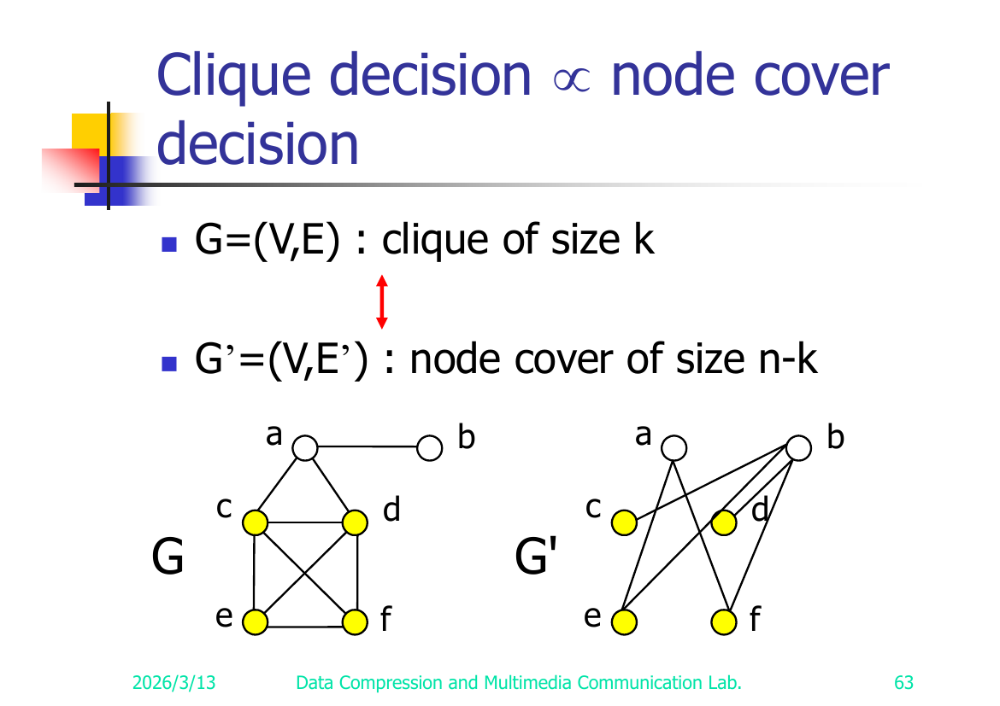
⇒ Node cover decision is NP-complete.⇒ Node cover decision 是 NP-complete。
Reduction 11 — SAT → Directed Hamiltonian Cycle (slide 64)Reduction 11 — SAT → Directed Hamiltonian Cycle (slide 64)
Hamiltonian cycle problem (slide 64). A Hamiltonian cycle is a round-trip path along n edges of G that visits every vertex exactly once and returns to its start.Hamiltonian cycle 問題 (slide 64)。一個 Hamiltonian cycle 就是沿著 G 的 n 條邊走一圈的路徑，每個點剛好經過一次，最後回到出發點。
Example: Hamiltonian cycle
1, 2, 8, 7, 6, 5, 4, 3, 1.例子：Hamiltonian cycle1, 2, 8, 7, 6, 5, 4, 3, 1。
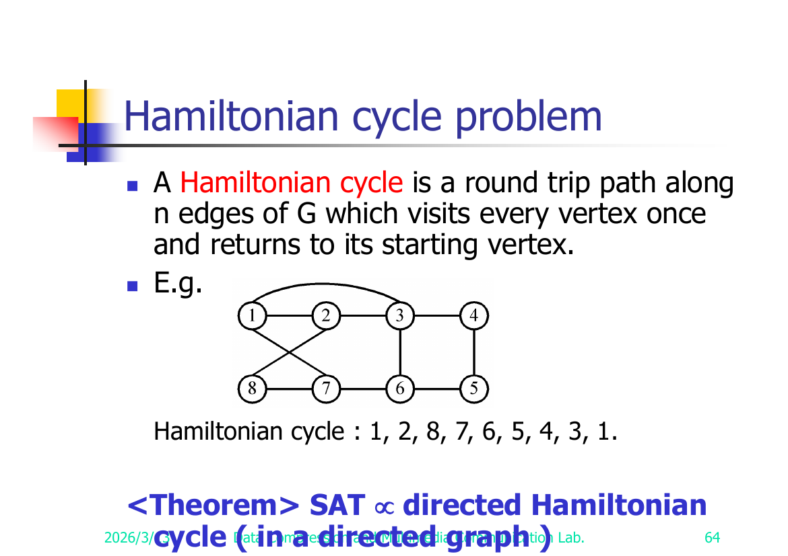
Theorem: SAT → directed Hamiltonian cycle (in a directed graph).定理：SAT → directed Hamiltonian cycle（在一個有向圖裡）。
Idea (reconstructed, standard). Build a directed graph with a "diamond/gadget" chain per variable (traversed left→right for xᵢ=T, right→left for xᵢ=F) and a vertex per clause; route the clause vertex through the variable gadgets so a Hamiltonian cycle exists iff each clause can be visited by some true literal. Formula satisfiable ⇔ directed Hamiltonian cycle exists.想法 （重建，標準做法）。蓋一個有向圖：每個變數配一條「鑽石／gadget」鏈（從左往右走代表 xᵢ=T，從右往左走代表 xᵢ=F），每個 clause 配一個點；再把 clause 點接進變數 gadget 裡，讓 Hamiltonian cycle 存在，若且唯若每個 clause 都能被某個為真的 literal 經過。於是 formula satisfiable ⇔ directed Hamiltonian cycle 存在。
⚠️ Reconstructed: slide 64 states only the theorem (plus the undirected example); no gadget construction in the dump. The variable-gadget / clause-vertex construction is the standard one; validate against slide 64.⚠️ 重建說明：slide 64 只寫了定理（加上那個無向圖的例子）；原始檔裡沒有 gadget 建構。「變數 gadget／clause 點」是標準做法；記得對照 slide 64 確認。
Reduction 12 — Directed Hamiltonian Cycle → TSP Decision (slides 65–66)Reduction 12 — Directed Hamiltonian Cycle → TSP Decision (slides 65–66)
Traveling salesperson problem (slide 65). A tour of a directed graph G=(V,E) is a directed cycle that includes every vertex in V. The problem: find a minimum-cost tour.Traveling salesperson 問題 (slide 65)。有向圖 G=(V,E) 的一個 tour 就是一個包含 V 裡每個點的有向 cycle。問題是：找一條 cost 最小的 tour。
Theorem: Directed Hamiltonian cycle → traveling salesperson decision problem.定理：Directed Hamiltonian cycle → traveling salesperson decision problem。
Construction (slide 66).建構方法 (slide 66)。

Given directed graph G=(V,E) (a Hamiltonian-cycle instance), build a complete weighted directed graph on the same vertices with edge weights:給一個有向圖 G=(V,E)（一個 Hamiltonian-cycle instance），在同樣那些點上蓋一個帶權重的完全有向圖，邊權重這樣設：
cost(u,v) = 1 if (u,v) ∈ E
cost(u,v) = 2 if (u,v) ∉ E (a larger value; "2" per the slide)
Ask the TSP decision question with bound C = n (= |V|).然後問 TSP 的 decision 問題，界限取 C = n（= |V|）。
Correctness. A tour of total cost ≤ n can only use cost-1 edges (any cost-2 edge pushes the total above n), i.e. it uses only edges of G ⇒ it is a directed Hamiltonian cycle of G. Conversely a Hamiltonian cycle of G has cost exactly n. So G has a directed Hamiltonian cycle ⇔ the TSP tour cost ≤ n.正確性。一條總 cost ≤ n 的 tour 只能用 cost-1 的邊（只要用到一條 cost-2 的邊，總和就超過 n 了），也就是它只用 G 原本的邊 ⇒ 它就是 G 的一個 directed Hamiltonian cycle。反過來，G 的一個 Hamiltonian cycle cost 剛好是 n。所以 G 有 directed Hamiltonian cycle ⇔ TSP tour 的 cost ≤ n。
⚠️ Reconstructed: slide 66 shows only a small picture with labels "1" and "2"; the weighting
1 / 2and boundC = nabove are the standard construction reading of those labels; validate against slide 66.⚠️ 重建說明：slide 66 只畫了一張小圖，上面標著「1」跟「2」；上面的1 / 2權重和界限C = n是依標準建構去解讀那些標籤的；記得對照 slide 66 確認。
Reduction 13 — Partition → 0/1 Knapsack Decision (slides 67–68)Reduction 13 — Partition → 0/1 Knapsack Decision (slides 67–68)
0/1 knapsack problem (slide 67). n objects, each with weight wᵢ > 0 and profit pᵢ > 0; knapsack capacity M.0/1 knapsack 問題 (slide 67)。有 n 個物品，每個有重量 wᵢ > 0 和利潤 pᵢ > 0；背包容量是 M。
Maximize Σ_{1≤i≤n} pᵢ xᵢ
Subject to Σ_{1≤i≤n} wᵢ xᵢ ≤ M , xᵢ ∈ {0, 1}
Decision version: given K, is there a 0/1 choice with Σ pᵢ xᵢ ≥ K (subject to the weight constraint)?Decision 版本：給一個 K，存不存在一組 0/1 的取法，在不超重的前提下達到 Σ pᵢ xᵢ ≥ K？
(The fractional knapsack problem allows
0 ≤ xᵢ ≤ 1and is not NP-complete — solvable greedily.)（fractional knapsack 問題允許0 ≤ xᵢ ≤ 1，它不是 NP-complete——用 greedy 就解得掉。）Theorem: partition → 0/1 knapsack decision problem.定理：partition → 0/1 knapsack decision problem。
Construction (reconstructed, standard). Given a partition instance A = {a₁,…,aₙ} with Tsum = Σ aᵢ, set wᵢ = pᵢ = aᵢ, capacity M = Tsum/2, and target profit K = Tsum/2. A subset with weight ≤ Tsum/2 and profit ≥ Tsum/2 must have weight = profit = Tsum/2 exactly ⇒ an equal-sum partition. So A is partitionable ⇔ the 0/1 knapsack decision answer is "Yes."建構方法 （重建，標準做法）。給一個 partition instance A = {a₁,…,aₙ}，Tsum = Σ aᵢ，就設 wᵢ = pᵢ = aᵢ，容量 M = Tsum/2，目標利潤 K = Tsum/2。一個重量 ≤ Tsum/2、利潤 ≥ Tsum/2 的子集，重量跟利潤就只能都剛好等於 Tsum/2 ⇒ 這正好是一個對半平分的 partition。所以 A 可平分 ⇔ 0/1 knapsack decision 的答案是「Yes」。
⚠️ Reconstructed: slide 68 states only the theorem; no construction in the dump. The
wᵢ=pᵢ=aᵢ, M=K=Tsum/2construction is the standard one; validate against slide 68.⚠️ 重建說明：slide 68 只寫了定理；原始檔裡沒有建構過程。wᵢ=pᵢ=aᵢ, M=K=Tsum/2是標準做法；記得對照 slide 68 確認。
Closing reference (slide 69)結尾參考資料 (slide 69)
Refer to Sec. 11.3, Sec. 11.4 and their exercises of [Horowitz & Sahni 1998] for the proofs of more NP-complete problems.想看更多 NP-complete 問題的證明，去翻 [Horowitz & Sahni 1998] 的 Sec. 11.3、Sec. 11.4 還有它們的習題。
⚠️ Items I reconstructed / couldn't fully verify⚠️ 我重建過／沒辦法完全確認的項目
Validation checklist — confirm each against the cited slide of the PDF (source/Alg08 - 相容模式.pdf). The dump drops the ≤ ≥ ≠ ∈ ∉ ⊆ ∨ ¬ □ glyphs, so logic/edge symbols were inferred throughout; the items below are the load-bearing reconstructions:驗證清單——每一項都去對照 PDF 上引用的那張投影片（source/Alg08 - 相容模式.pdf）。原始檔把 ≤ ≥ ≠ ∈ ∉ ⊆ ∨ ¬ □ 這些符號都吃掉了，所以邏輯／邊的符號整份都是推回去的；下面這些是關鍵的重建：
| # | Slide(s)Slide(s) | Item項目 | What was reconstructed重建了什麼 | Risk風險 |
|---|---|---|---|---|
| 1 | 27 | Searching→SAT, "both ≠ 7" resolutionSearching→SAT，「兩個都 ≠ 7」的 resolution | Renumbered the duplicated (11)/(16) derivation lines to (11)–(17)把重複標的 (11)/(16) 推導行重新編號成 (11)–(17) |
Low (chain is clear)低（推導鏈很清楚） |
| 2 | 41 | SAT→3-SAT (⇒)SAT→3-SAT (⇒) | Chain-variable assignment (set yⱼ true before / false after the true literal's clause)鏈變數的指派（真 literal 那個 clause 之前的 yⱼ 設真、之後設假） | Medium — slide text garbled中——投影片文字亂掉 |
| 3 | 46, 47 | SATY→CN edge set ESATY→CN 的邊集合 E | Full edge families, esp. (xᵢ,cⱼ) for xᵢ ∉ cⱼ and (¬xᵢ,cⱼ) for ¬xᵢ ∉ cⱼ; the ≠ / ∈ / ∉ conditions完整的邊族，尤其是 xᵢ ∉ cⱼ 時的 (xᵢ,cⱼ) 和 ¬xᵢ ∉ cⱼ 時的 (¬xᵢ,cⱼ)；還有 ≠ / ∈ / ∉ 這些條件 |
✅ Verified against slide 47 (and edge set printed verbatim on slide 46). ∉ confirmed. See Appendix A.✅ 已對照 slide 47 驗證（邊集合在 slide 46 一字不差印出來）。∉ 確認無誤。見 Appendix A。 |
| 4 | 51 | CN → exact coverCN → exact cover | Construction not in dump — only the theorem is stated原始檔裡沒有建構——只寫了定理 | High — verify if slide carries a construction高——確認投影片有沒有附建構 |
| 5 | 54 | Exact cover→sum-of-subsets exampleExact cover→sum-of-subsets 的例子 | Superscript restorations (4⁰+4¹ etc.) and the 2nd variant's base/set list (a duplicated "S₃")上標的還原（4⁰+4¹ 之類）和第 2 個變形的 base／集合清單（重複的「S₃」） |
✅ Verified against slide 54. Superscripts correct; the duplicated "S₃" is a genuine slide typo (4th set should be S₄={1,3}); 2nd variant uses base 2. See Appendix A.✅ 已對照 slide 54 驗證。上標正確；重複的「S₃」是投影片本身的 typo（第 4 個集合應該是 S₄={1,3}）；第 2 個變形用 base 2。見 Appendix A。 |
| 6 | 58 | Partition → bin packingPartition → bin packing | Construction not in dump — used standard 2-bins, capacity Tsum/2原始檔裡沒有建構——用了標準的 2 個 bin、容量 Tsum/2 | High高 |
| 7 | 60 | Bin packing → VLSI layoutBin packing → VLSI layout | Construction not in dump — rectangle-per-item intuition only原始檔裡沒有建構——只有「一個物品配一個矩形」的直覺 | High高 |
| 8 | 61 | SAT → clique decisionSAT → clique decision | Construction not in dump — used standard literal-vertex / inter-clause-non-conflict, k=m原始檔裡沒有建構——用了標準的「literal 當點／跨 clause 不衝突」、k=m | High高 |
| 9 | 64 | SAT → directed Hamiltonian cycleSAT → directed Hamiltonian cycle | Construction not in dump — used standard variable-gadget/clause-vertex idea原始檔裡沒有建構——用了標準的「變數 gadget／clause 點」想法 | High高 |
| 10 | 66 | Dir. Hamiltonian cycle → TSPDir. Hamiltonian cycle → TSP | Edge weights 1/2 and bound C=n inferred from the picture labels "1","2"邊權重 1/2 和界限 C=n 是從圖上的標籤「1」「2」推回去的 |
✅ Edge weights verified against slide 66 (left = original G, edges cost 1; right = completed graph, added edges blue = cost 2). Bound C=n not printed on the slide (implied by construction). See Appendix A.✅ 邊權重已對照 slide 66 驗證（左邊 = 原圖 G，邊 cost 1；右邊 = 補成的完全圖，加上去的藍邊 = cost 2）。界限 C=n 投影片沒印出來（是建構隱含的）。見 Appendix A。 |
| 11 | 68 | Partition → 0/1 knapsackPartition → 0/1 knapsack | Construction not in dump — used standard wᵢ=pᵢ=aᵢ, M=K=Tsum/2原始檔裡沒有建構——用了標準的 wᵢ=pᵢ=aᵢ, M=K=Tsum/2 |
High高 |
| 12 | 31–33 | Node cover → SAT CNFNode cover → SAT 的 CNF | Grouped/restored the (A)–(D) clause families and the = / ≠ / ∈ meanings把 (A)–(D) 那幾組 clause 跟 = / ≠ / ∈ 的意思分組／還原 |
Medium-High中高 |
Note on items 4, 6, 7, 8, 9, 11: these slides in the deck state the reduction as a theorem only (the textbook leaves the construction to Horowitz & Sahni Sec. 11.3–11.4). The constructions given here are the standard textbook ones, supplied so the note is self-contained — but they are not transcribed from the slides. Treat them as study aids and confirm scope expectations with the course.關於第 4、6、7、8、9、11 項：這幾張投影片只把 reduction 當定理寫出來（課本把建構丟給 Horowitz & Sahni Sec. 11.3–11.4）。這裡給的建構是課本標準版本，補上去是為了讓這份筆記能自成一體——但它們不是從投影片抄下來的。把它們當複習輔助就好，考試範圍記得跟課程那邊確認。
Appendix A — Figures (visually extracted from slide images)Appendix A — 圖（從投影片圖片肉眼抓出來的）
Transcribed directly from the rendered slide PNGs (render/A08/slide-NN.png). These are the diagrams the text dump could not recover. Graph edges are listed explicitly; colors/assignments are read off the figures.直接從算好的投影片 PNG（render/A08/slide-NN.png）轉錄出來的。這些是文字檔救不回來的圖。圖的邊都明列出來，顏色／指派則是從圖上讀的。
Slide 13 — Semantic tree (unsatisfiable formula)Slide 13 — Semantic tree（unsatisfiable formula）
A binary tree, branching on variables, whose nodes are annotated with the clause that falsifies that branch. Reading the figure:一棵二元樹，每層對一個變數分岔，每個節點都標上把那條分支弄垮的 clause。照圖讀下來：
- Root
(7)(□)— branches on x₂: left edge labelledx₂ ← T : x₂, right edge labelled-x₂ : x₂ ← F.根(7)(□)— 對 x₂ 分岔：左邊標x₂ ← T : x₂，右邊標-x₂ : x₂ ← F。 - Right child
(3)(x₂)— labelled "become false" (a leaf; clause (3)x₂falsified when x₂←F).右子節點(3)(x₂)— 標著 「become false」（是葉子；x₂←F 時 clause (3)x₂被弄垮）。 - Left child
(6)(-x₂)— branches on x₃: left edgex₃, right edge-x₃.左子節點(6)(-x₂)— 對 x₃ 分岔：左邊x₃，右邊-x₃。- Left child
(4)(-x₃)— leaf.左子節點(4)(-x₃)— 葉子。 - Right child
(5)(-x₂ ∨ x₃)— branches on x₁: left edgex₁, right edge-x₁.右子節點(5)(-x₂ ∨ x₃)— 對 x₁ 分岔：左邊x₁，右邊-x₁。 - Left leaf
(1)(-x₁ ∨ -x₂ ∨ x₃).左葉子(1)(-x₁ ∨ -x₂ ∨ x₃)。 - Right leaf
(2)(x₁ ∨ -x₂)— labelled "become false".右葉子(2)(x₁ ∨ -x₂)— 標著 「become false」。
- Left child
Every leaf is attached to (falsified by) some clause ⇒ the formula is unsatisfiable. (This is the figure for the slide-12 unsatisfiable example.)每個葉子都掛上（被弄垮於）某個 clause ⇒ 這個 formula 是 unsatisfiable。（這就是 slide-12 那個 unsatisfiable 例子的圖。）
Slide 25 — Semantic tree for Searching→SAT, "both inputs ≠ 7" (unsatisfiable)Slide 25 — Searching→SAT「兩個輸入都 ≠ 7」的 semantic tree（unsatisfiable）
A single descending (right-leaning) chain of decision nodes; each internal node branches into a leaf labelled by the clause it falsifies and a child that continues the chain. Top-to-bottom:就是一條往下、偏右的決策節點鏈；每個內部節點分出一個葉子（標著它弄垮的 clause）跟一個繼續往下接的子節點。由上到下：
- Root branches on SUCCESS: left
SUCCESS→ child; right-SUCCESS→ leaf (8).根對 SUCCESS 分岔：左SUCCESS→ 子節點；右-SUCCESS→ 葉子 (8)。 - Next node branches on FAILURE: left
FAILURE→ leaf (7); right-FAILURE→ child.下一個節點對 FAILURE 分岔：左FAILURE→ 葉子 (7)；右-FAILURE→ 子節點。 - branch
X(1)=7→ child /X(1)≠7→ leaf (9).分岔X(1)=7→ 子節點／X(1)≠7→ 葉子 (9)。 - branch
X(2)=7→ leaf (10) /X(2)≠7→ child.分岔X(2)=7→ 葉子 (10)／X(2)≠7→ 子節點。 - branch on i:
i=1→ child /i≠1→ child.對 i 分岔：i=1→ 子節點／i≠1→ 子節點。 - under
i=1:i=2→ leaf (2) /i≠2→ leaf (closes).i=1底下：i=2→ 葉子 (2)／i≠2→ 葉子（收尾）。 - under
i≠1:i=2→ leaf (6) /i≠2→ leaf (1).i≠1底下：i=2→ 葉子 (6)／i≠2→ 葉子 (1)。
Each leaf is attached to a clause of the CNF (slide 26) ⇒ no escaping assignment ⇒ unsatisfiable ⇒ 7 is absent. (Clause numbers match the slide-26 CNF.)每個葉子都掛到 CNF（slide 26）的某個 clause ⇒ 沒有任何指派躲得掉 ⇒ unsatisfiable ⇒ 7 不在裡面。（clause 編號跟 slide-26 的 CNF 對得上。）
Slide 29 — Semantic tree for Searching→SAT, "both inputs = 7" (satisfiable)Slide 29 — Searching→SAT「兩個輸入都 = 7」的 semantic tree（satisfiable）
Same shape as slide 25 but the branch order is X(1)=7 → X(2)=7 → SUCCESS → -FAILURE → i. Leaves are labelled with clause numbers (9),(10),(7),(8),(2),(1) and (6). Two root-to-leaf paths survive without hitting a contradiction. Slide caption (red): "It implies that both assignments (i=1, i=2) satisfy the clauses." ⇒ formula satisfiable; either index witnesses "7 is present."形狀跟 slide 25 一樣，但分岔順序是 X(1)=7 → X(2)=7 → SUCCESS → -FAILURE → i。葉子標的 clause 編號是 (9),(10),(7),(8),(2),(1) 跟 (6)。有兩條從根到葉子的路徑沒撞到矛盾、活了下來。投影片紅字：「這代表 i=1 跟 i=2 兩種指派都能滿足所有 clause。」⇒ formula satisfiable；隨便哪個 index 都能見證「7 在裡面」。
Slide 30 — Node cover example graphSlide 30 — Node cover 例子圖
Undirected graph, 5 vertices {1,2,3,4,5}.
Edge list: (1,2), (1,5), (2,3), (3,4).
Layout: 1 top-left, 2 top-right, 3 middle, 4 bottom-right, 5 bottom-left. Vertex 1 connects right to 2 and down to 5; vertex 2 connects down-left to 3; vertex 3 connects down-right to 4.
Node covers shown: {1,3} and {5,2,4}.無向圖，5 個點 {1,2,3,4,5}。
邊清單：(1,2), (1,5), (2,3), (3,4)。
擺位：1 左上、2 右上、3 中間、4 右下、5 左下。點 1 往右連 2、往下連 5；點 2 往左下連 3；點 3 往右下連 4。
圖中標出的 node cover：{1,3} 和 {5,2,4}。
Slide 45 — Chromatic-number example graph (3-colorable)Slide 45 — Chromatic-number 例子圖（可 3 色著色）
Undirected graph, 5 vertices {a,b,c,d,e}.
Edge list: (a,b), (a,d), (b,c), (d,e), (c,e) (a 5-cycle a-b-c-e-d-a).
Layout: a top-left, b top-right, d middle-right, c-area; e at the bottom apex.
Coloring (k=3): f(a)=1, f(b)=2, f(c)=1, f(d)=2, f(e)=3.
Colors drawn: a = green(1), b = red(2), c = green(1), d = red(2), e = yellow(3). 3-colorable.無向圖，5 個點 {a,b,c,d,e}。
邊清單：(a,b), (a,d), (b,c), (d,e), (c,e)（一個 5-cycle a-b-c-e-d-a）。
擺位：a 左上、b 右上、d 右中、c 一帶；e 在最下方的頂點。
著色 (k=3)：f(a)=1, f(b)=2, f(c)=1, f(d)=2, f(e)=3。
圖上畫的顏色：a = 綠(1)、b = 紅(2)、c = 綠(1)、d = 紅(2)、e = 黃(3)。可 3 色著色。
Slide 47 — SATY→CN graph construction (the worked example) — CRITICALSlide 47 — SATY→CN 圖建構（實際例子）— 重點
SATY instance, n = 4, clauses: (1) x₁ ∨ x₂ ∨ x₃ and (2) ¬x₃ ∨ ¬x₄ ∨ x₂.SATY instance，n = 4，clause：(1) x₁ ∨ x₂ ∨ x₃ 和 (2) ¬x₃ ∨ ¬x₄ ∨ x₂。
Vertices (two rows):
- Top row (8 literal vertices), left→right: x₁, x₂, x₃, x₄, ¬x₁, ¬x₂, ¬x₃, ¬x₄.
- Bottom row: the y-clique y₁, y₂, y₃, y₄ then the two clause vertices c₁, c₂.點（兩排）：
- 上排（8 個 literal 點），由左到右：x₁, x₂, x₃, x₄, ¬x₁, ¬x₂, ¬x₃, ¬x₄。
- 下排：y-clique y₁, y₂, y₃, y₄，接著是兩個 clause 點 c₁, c₂。
Coloring shown above/below each vertex (an (n+1)=5-coloring):每個點上下標的著色（一個 (n+1)=5 色著色）：
| vertex點 | x₁ | x₂ | x₃ | x₄ | ¬x₁ | ¬x₂ | ¬x₃ | ¬x₄ | y₁ | y₂ | y₃ | y₄ | c₁ | c₂ |
|---|---|---|---|---|---|---|---|---|---|---|---|---|---|---|
| color顏色 | 1 | 5 | 5 | 4 | 5 | 2 | 3 | 5 | 1 | 2 | 3 | 4 | 1 | 3 |
Vertex fill colors observed: x₁ black, x₂ yellow, x₃/x₄/¬x₁/¬x₂ white/open, ¬x₃ teal, ¬x₄ blue; y₁ black, y₂ yellow, y₃ teal, y₄ blue; c₁ black, c₂ teal. (Fill colors are decorative; the numeric labels are the coloring.)觀察到的點填色：x₁ 黑、x₂ 黃、x₃/x₄/¬x₁/¬x₂ 白／空心、¬x₃ 青、¬x₄ 藍；y₁ 黑、y₂ 黃、y₃ 青、y₄ 藍；c₁ 黑、c₂ 青。（這些填色只是裝飾用；真正的著色是那些數字標籤。）
Edges (per the slide-46 construction, instantiated for n=4, the two clauses): - Conflict edges (xᵢ,¬xᵢ): (x₁,¬x₁), (x₂,¬x₂), (x₃,¬x₃), (x₄,¬x₄). - y-clique (yᵢ,yⱼ) i≠j: all 6 pairs among {y₁,y₂,y₃,y₄}. - (yᵢ, xⱼ) i≠j and (yᵢ, ¬xⱼ) i≠j: each yᵢ joins every literal vertex except xᵢ and ¬xᵢ (so yᵢ touches 6 of the 8 literal vertices). This is the dense web from each yᵢ up to the literal row. - (xᵢ, cⱼ) for xᵢ ∉ cⱼ and (¬xᵢ, cⱼ) for ¬xᵢ ∉ cⱼ: - c₁ = {x₁,x₂,x₃} → c₁ joins the literals not in it: x₄, ¬x₁, ¬x₂, ¬x₃, ¬x₄ (5 edges). - c₂ = {¬x₃,¬x₄,x₂} → c₂ joins: x₁, x₃, x₄, ¬x₁, ¬x₂ (5 edges).邊（依 slide-46 的建構，套在 n=4、這兩個 clause 上）： - 衝突邊 (xᵢ,¬xᵢ)：(x₁,¬x₁), (x₂,¬x₂), (x₃,¬x₃), (x₄,¬x₄)。 - y-clique (yᵢ,yⱼ) i≠j：{y₁,y₂,y₃,y₄} 之間全部 6 對。 - (yᵢ, xⱼ) i≠j 和 (yᵢ, ¬xⱼ) i≠j：每個 yᵢ 連到除了 xᵢ 跟 ¬xᵢ 以外的每個 literal 點（所以 yᵢ 碰到 8 個 literal 點裡的 6 個）。這就是每個 yᵢ 往上連到 literal 那排的那張密網。 - xᵢ ∉ cⱼ 時的 (xᵢ, cⱼ) 和 ¬xᵢ ∉ cⱼ 時的 (¬xᵢ, cⱼ)： - c₁ = {x₁,x₂,x₃} → c₁ 連到不在它裡面的 literal：x₄, ¬x₁, ¬x₂, ¬x₃, ¬x₄（5 條邊）。 - c₂ = {¬x₃,¬x₄,x₂} → c₂ 連到：x₁, x₃, x₄, ¬x₁, ¬x₂（5 條邊）。
Verification of the coloring (reads off a satisfying assignment): yᵢ=i ✓. x₁=T (f(x₁)=1, f(¬x₁)=5=n+1) ✓; x₂=F (f(¬x₂)=2, f(x₂)=5) ✓; x₃=F (f(¬x₃)=3, f(x₃)=5) ✓; x₄=T (f(x₄)=4, f(¬x₄)=5) ✓. Clause colors: f(c₁)=1=f(x₁) ⇒ x₁∈c₁ true ✓; f(c₂)=3=f(¬x₃) ⇒ ¬x₃∈c₂ true ✓. Uses colors {1..5} and respects every edge ⇒ 5-colorable ⇔ satisfiable.驗證這個著色（直接讀出一組滿足的指派）：yᵢ=i ✓。x₁=T (f(x₁)=1, f(¬x₁)=5=n+1) ✓；x₂=F (f(¬x₂)=2, f(x₂)=5) ✓；x₃=F (f(¬x₃)=3, f(x₃)=5) ✓；x₄=T (f(x₄)=4, f(¬x₄)=5) ✓。clause 顏色：f(c₁)=1=f(x₁) ⇒ x₁∈c₁ 為真 ✓；f(c₂)=3=f(¬x₃) ⇒ ¬x₃∈c₂ 為真 ✓。只用到 {1..5} 這些顏色、每條邊都不衝突 ⇒ 可 5 色著色 ⇔ satisfiable。
SATY→CN VERDICT: The note's reconstructed construction (V and the six edge families) is CONFIRMED — it matches slide 46's edge set verbatim and slide 47's drawn graph + coloring. The critical condition is (literal, cⱼ) whenever the literal is NOT in cⱼ (i.e. ∉), exactly as the note states. No correction needed.SATY→CN 結論：這份筆記重建的建構（V 加上那六族邊）已確認無誤——它跟 slide 46 的邊集合一字不差、也吻合 slide 47 畫的圖加上著色。關鍵條件是 literal 不在 cⱼ 裡時才連 (literal, cⱼ)（也就是 ∉），跟筆記寫的完全一樣。不用修正。
Slide 50 — Set cover exampleSlide 50 — Set cover 例子
Family F = {(a₁,a₃), (a₂,a₄), (a₂,a₃), (a₄)}, named s₁=(a₁,a₃), s₂=(a₂,a₄), s₃=(a₂,a₃), s₄=(a₄). Universe {a₁,a₂,a₃,a₄}.
- T = {s₁, s₃, s₄} — a set cover (covers a₁,a₃,a₂,a₄; not disjoint since a₃ repeats).
- T = {s₁, s₂} — a set cover AND exact cover (s₁={a₁,a₃}, s₂={a₂,a₄}, disjoint, cover all).集合族 F = {(a₁,a₃), (a₂,a₄), (a₂,a₃), (a₄)}，分別命名為 s₁=(a₁,a₃), s₂=(a₂,a₄), s₃=(a₂,a₃), s₄=(a₄)。全集 {a₁,a₂,a₃,a₄}。
- T = {s₁, s₃, s₄} — 是一個 set cover（蓋住 a₁,a₃,a₂,a₄；但因為 a₃ 重複所以不相交）。
- T = {s₁, s₂} — 既是 set cover 也是 exact cover（s₁={a₁,a₃}, s₂={a₂,a₄}，不相交又蓋住全部）。
Slide 54 — Exact cover → sum of subsets, worked example (two variants)Slide 54 — Exact cover → sum of subsets，實際例子（兩個變形）
Left variant (proper, base k+1 = 4, k = 3 sets):
Universe u₁=1, u₂=2, u₃=3 (n=3). Sets S₁={1,2}, S₂={3}, S₃={1,3}, F={1,2,3}.左邊變形（正確版，base k+1 = 4，k = 3 個集合）：
全集 u₁=1, u₂=2, u₃=3（n=3）。集合 S₁={1,2}, S₂={3}, S₃={1,3}，F={1,2,3}。
a₁ = 4⁰ + 4¹ = 5 (S₁ has u₁,u₂)
a₂ = 4² = 16 (S₂ has u₃)
a₃ = 4⁰ + 4² = 17 (S₃ has u₁,u₃)
C = 4⁰ + 4¹ + 4² = 21
Exact cover {S₁,S₂} ⇒ 5 + 16 = 21 = C. ✓Exact cover {S₁,S₂} ⇒ 5 + 16 = 21 = C。✓
Right variant (base 2 — the deliberately too-small base, "k−1=2 is selected"):
The slide's set list reads S₁={1,2}, S₂={2}, S₃={2}, S₃={1,3} — the slide itself prints "S₃" twice; the fourth set is clearly meant to be S₄={1,3} (this is a slide typo, not a transcription error).右邊變形（base 2——故意取太小的 base，「k−1=2 is selected」）：
投影片的集合清單寫的是 S₁={1,2}, S₂={2}, S₃={2}, S₃={1,3}——投影片自己把「S₃」印了兩次；第 4 個集合明顯該是 S₄={1,3}（這是投影片的 typo，不是轉錄錯誤）。
a₁ = 2⁰ + 2¹ = 3
a₂ = 2¹ = 2
a₃ = 2¹ = 2
a₄ = 2¹ + 2² = 6
C = 2⁰ + 2¹ + 2² = 7
Demonstrates that with too small a base, carries/collisions can occur. (Slide annotates "k−1=2 is selected" — i.e. the base used here is 2.)這示範了 base 取太小時，進位／碰撞就可能發生。（投影片註記「k−1=2 is selected」——也就是這裡用的 base 是 2。）
Slide 61 — Max clique example graphSlide 61 — Max clique 例子圖
Undirected graph, 6 vertices {a,b,c,d,e,f}.
Layout: a top, b top-right (pendant), c/d middle row, e/f bottom row.
Edge list: (a,b), (a,c), (a,d), (c,d), (c,e), (c,f), (d,e), (d,f), (e,f).
(Note b is a pendant vertex, edge only to a.) {c,d,e,f} is a 4-clique (all 6 internal edges present).
- Maximal cliques: {a,b}, {a,c,d}, {c,d,e,f}.
- Maximum clique: {c,d,e,f}.無向圖，6 個點 {a,b,c,d,e,f}。
擺位：a 在上、b 右上（懸掛點）、c/d 中間排、e/f 底排。
邊清單：(a,b), (a,c), (a,d), (c,d), (c,e), (c,f), (d,e), (d,f), (e,f)。
（注意 b 是懸掛點，只跟 a 有邊。）{c,d,e,f} 是一個 4-clique（內部 6 條邊全在）。
- Maximal clique：{a,b}, {a,c,d}, {c,d,e,f}。
- Maximum clique：{c,d,e,f}。
Slide 63 — Clique → node cover (G and its complement G′)Slide 63 — Clique → node cover（G 跟它的補圖 G′）
Same 6 vertices {a,b,c,d,e,f} in both graphs.兩張圖都是同樣這 6 個點 {a,b,c,d,e,f}。
G (left) — identical to the slide-61 graph:
Edge list: (a,b), (a,c), (a,d), (c,d), (c,e), (c,f), (d,e), (d,f), (e,f).
Clique highlighted: {c,d,e,f} (size k=4); these four vertices drawn yellow.G（左）——跟 slide-61 那張圖一模一樣：
邊清單：(a,b), (a,c), (a,d), (c,d), (c,e), (c,f), (d,e), (d,f), (e,f)。
標出來的 clique：{c,d,e,f}（大小 k=4）；這四個點畫成黃色。
G′ (right) — the complement on the same 6 vertices (E′ = non-edges of G): G has 9 edges; K₆ has 15; so G′ has 6 edges. Edge list of G′: (a,e), (a,f), (b,c), (b,d), (b,e), (b,f). (Check: a's non-neighbors in G are e,f → (a,e),(a,f); b's non-neighbors are c,d,e,f → 4 edges; c,d,e,f are mutually complete in G so no further G′ edges. Total 6. ✓ The drawing shows a and b at top each fanning down to lower vertices.) Node cover of G′ = V∖clique = {a,b} (size n−k = 6−4 = 2). Every G′ edge is incident to a or b. ✓G′（右）——同樣 6 個點上的補圖（E′ = G 的非邊）： G 有 9 條邊；K₆ 有 15 條；所以 G′ 有 6 條邊。 G′ 的邊清單：(a,e), (a,f), (b,c), (b,d), (b,e), (b,f)。 （驗算：a 在 G 裡的非鄰居是 e,f → (a,e),(a,f)；b 的非鄰居是 c,d,e,f → 4 條邊；c,d,e,f 在 G 裡彼此完全相連，所以 G′ 裡沒有更多邊。總共 6 條。✓ 圖上畫的是 a 跟 b 在上方，各自往下面那些點散開。） G′ 的 node cover = V∖clique = {a,b}（大小 n−k = 6−4 = 2）。G′ 的每條邊都碰到 a 或 b。✓
Slide 64 — Hamiltonian cycle example graphSlide 64 — Hamiltonian cycle 例子圖
Undirected graph, 8 vertices {1,…,8} in two rows: top 1,2,3,4 (left→right), bottom 8,7,6,5 (left→right, so 8 under 1, 5 under 4).
Edge list: (1,2), (2,3), (3,4), (1,3) [the curved top arc], (1,6), (2,7) [the two crossing diagonals], (8,7), (7,6), (6,5), (4,5), (3,6).
(The crossing "X" in the middle is edges (1,6) and (2,7); the long curved arc over the top connects 1 and 3.)
Hamiltonian cycle drawn: 1, 2, 8, 7, 6, 5, 4, 3, 1.無向圖，8 個點 {1,…,8} 排成兩排：上排 1,2,3,4（左→右），下排 8,7,6,5（左→右，所以 8 在 1 底下、5 在 4 底下）。
邊清單：(1,2), (2,3), (3,4), (1,3)〔頂端那條彎弧〕, (1,6), (2,7)〔中間那兩條交叉斜線〕, (8,7), (7,6), (6,5), (4,5), (3,6)。
（中間那個交叉的「X」是邊 (1,6) 跟 (2,7)；頂端那條長彎弧連的是 1 和 3。）
圖上畫的 Hamiltonian cycle：1, 2, 8, 7, 6, 5, 4, 3, 1。
Note: edge (2,8) is required by the stated cycle (2→8); the figure's lower-left region is slightly ambiguous, but the cycle 1-2-8-7-6-5-4-3-1 implies edges (2,8) and (3,1) exist. Treat the cycle as authoritative.註：標出的 cycle (2→8) 需要邊 (2,8)；圖的左下角有點模糊，但 cycle 1-2-8-7-6-5-4-3-1 隱含邊 (2,8) 跟 (3,1) 存在。以這個 cycle 為準就對了。
Slide 66 — Directed Hamiltonian → TSP proof gadgetSlide 66 — Directed Hamiltonian → TSP 證明 gadget
Two drawings of the same 7-vertex graph (heptagon layout). - Left: the original Hamiltonian-cycle instance G — only its actual edges drawn (black), forming the sparse graph. - Right: the TSP instance — the complete graph on the same 7 vertices. Edges that were in G are black and labelled cost "1"; edges added to complete the graph (not in G) are drawn in blue and labelled cost "2".同一張 7 個點的圖畫了兩次（七邊形擺位）。 - 左：原本的 Hamiltonian-cycle instance G——只畫它實際有的邊（黑色），形成那張稀疏的圖。 - 右：TSP instance——同樣 7 個點上的完全圖。原本在 G 裡的邊是黑色、標 cost 「1」；為了補成完全圖才加上去（不在 G 裡）的邊畫成藍色、標 cost 「2」。
This confirms the note's weighting: cost = 1 for original edges, cost = 2 for added (non-)edges, and a TSP tour of cost ≤ n uses only cost-1 edges ⇒ a Hamiltonian cycle of G. (The slide shows only the "1"/"2" labels and the two graphs; the bound C = n is implied by the construction, not printed.)這印證了筆記裡的權重設法：原本的邊 cost = 1，補上去的（非）邊 cost = 2，而一條 cost ≤ n 的 TSP tour 只能用 cost-1 的邊 ⇒ 它就是 G 的一個 Hamiltonian cycle。（投影片只畫了「1」「2」標籤跟兩張圖；界限 C = n 是建構隱含的，沒印出來。）
Questions on anything here? Ask your teacher (the agent) — that's what I'm for.
The original slides are rendered as images in render/ for eyeball validation.這裡有任何看不懂的地方嗎？直接問你的老師（agent）——我就是幹這個的。原始投影片都算成圖片放在 render/ 裡，方便你用眼睛核對。